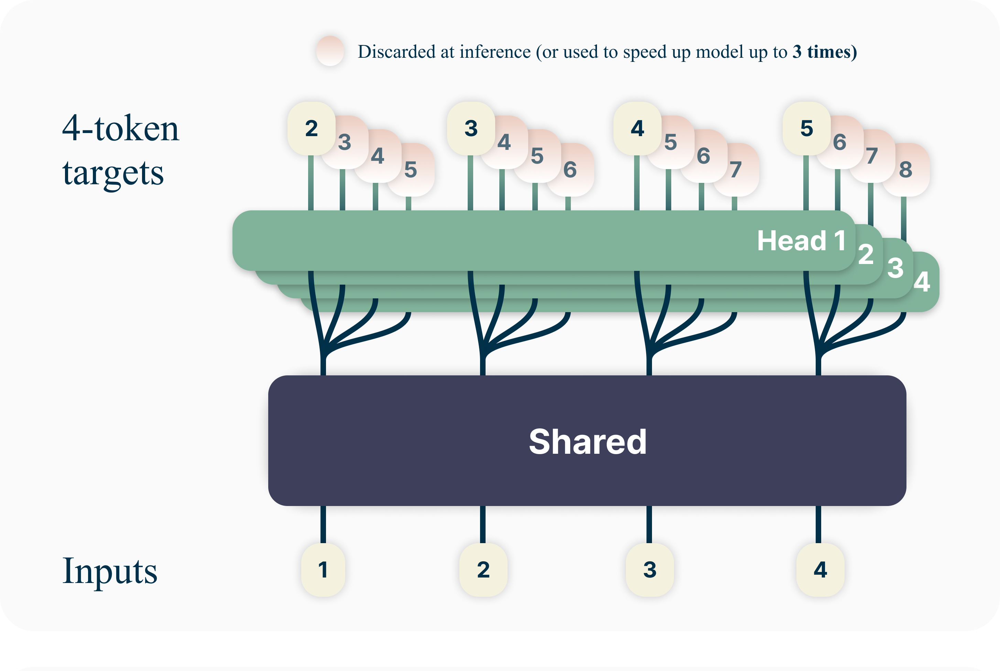
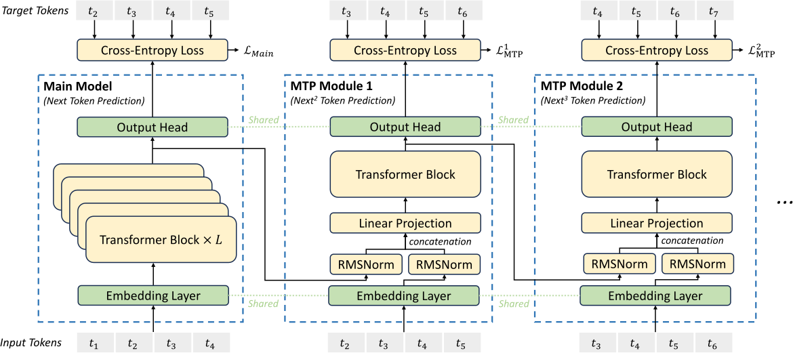
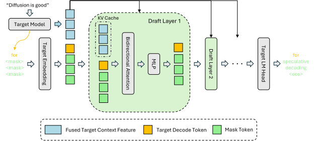
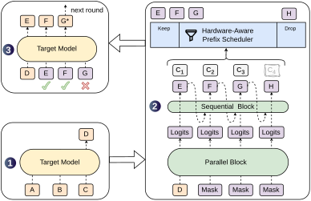
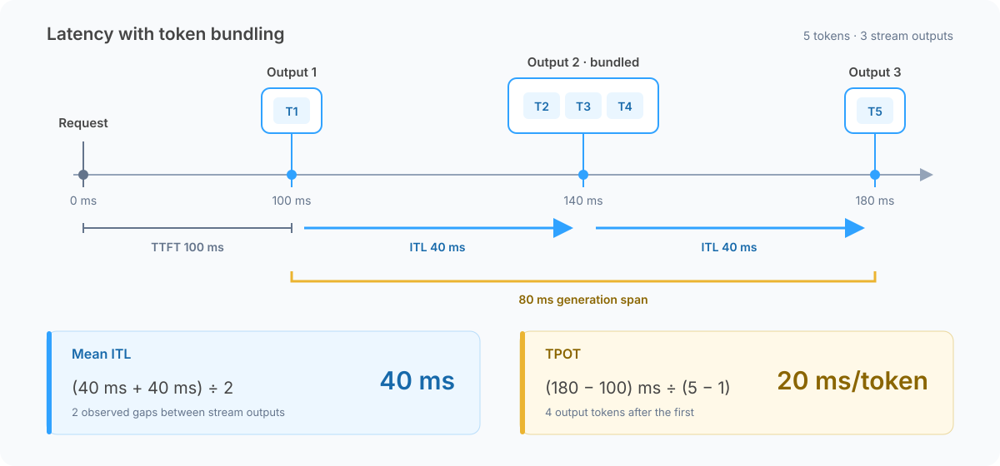
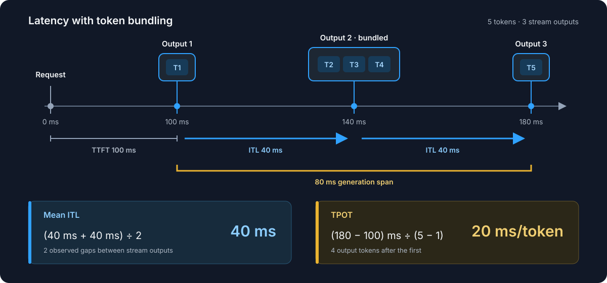

跳到正文
阅读进度 0%
切换浅色
展开扩展内容
打印 / PDF
vLLM Ascend · Speculative Decoding
推理引擎专项投机推理特性
1.1 标准自回归 decode：每轮只向前推进一个 Token
标准自回归解码中，每生成一个 Token，都要让 target 完成一轮前向。小 batch 下，每轮只为少数 Token 计算，权重读取成本难以摊薄，计算单元可能在等待数据。问题不是 target 不够聪明，而是昂贵前向必须串行重复很多轮。
普通 AR ：生成 4 个 Token，需要 4 轮串行 target 前向
target → x₁ 第 1 轮
target → x₂ 第 2 轮
target → x₃ 第 3 轮
target → x₄ 第 4 轮
这里只解释普通 AR 的串行轮次问题；大 batch、PD 和收益拐点统一放到第 8 章。
1.2 投机推理：draft 便宜地提议，target 用更少轮次验证
投机推理不让小模型替代 target，而是先由 draft 准备多个候选，再让 target 用一次前向计算验证所需的 logits。并行的是对已有候选的验证 ，不是打破自回归因果依赖。
一轮投机：draft 提议，target 验证，最终由 target 决定
一轮投机的 draft、target 验证与两种输出分支
draft 提出四个候选，箭头流向 target 的一次前向验证，再流向连续前缀判定。判定后分成两条互斥路径：全部接受时输出四个候选和 bonus，共五个 Token；d4 被拒绝时输出三个接受候选和一个修正 Token，共四个 Token，并丢弃旧 d4 与后续结果。
01 · DRAFT PROPOSE
02 · TARGET VERIFY
03 · PREFIX DECISION
04 · TARGET DECIDES OUTPUT
draft × 4
d₁ d₂ d₃ d₄
便宜地提出 4 个候选
此时尚未被 target 确认
1 组候选
target verify × 1
[a₀, d₁, d₂, d₃, d₄]
一次前向得到全部位置 logits
不是 4 次完整 target 前向
全部 logits
连续前缀判定
d₁ → d₂ → d₃ → d₄
按序接受，直到首个拒绝
全部接受时再取 bonus
全部通过
d₄ 被拒绝
全部接受
d₁ d₂ d₃ d₄ + bonus
输出 5 个 Token
含 target 产生的 bonus
首个拒绝：d₄
d₁ d₂ d₃ + c₄
3 个接受 + 1 个修正 = 4 个
丢弃旧 d₄ 与后续结果
箭头只经过一次 target verify。右侧两条路径互斥：全部接受时为 4 个候选 + 1 个 bonus，共 5 个 Token；d₄ 被拒绝时为 3 个接受 + 1 个 target 修正，共 4 个，旧 d₄ 与后续结果不再使用。下一节逐步展开这一过程。
Draft：便宜地提议 来自小模型、MTP 模块、块并行草稿网络或历史模式。候选越准、生成成本越低越好。
Target：一次并行验证 把已生成的候选排进输入序列，一次前向得到所有位置的 logits，而不是逐个验证。
输出：连续前缀 + 恢复 接受从第一个候选开始连续通过验证的最长前缀，在首个拒绝位置修正；全部接受时再取 bonus。
1.3 一轮验证：Token 与 logits 如何对应
输入为 a₀, d₁, d₂, d₃, d₄。前四份 logits 分别验证 d₁–d₄，d₄ 位置的 logits 还能预测 bonus。可以切换“全部接受”和“d₄ 被拒绝”观察输出差异。
验证过程演示 先选路径，再用“下一步”观察候选、对应 logits 和输出数量。
全部接受
d₄ 被拒绝
← 上一步
重置
下一步 →
target 输出位置 验证中的作用
a₀ logits 验证 d₁ d₁ logits 验证 d₂ d₂ logits 验证 d₃ d₃ 位置的 logits 验证 d₄ d₄ logits 全部接受时预测 bonus；d₄ 被拒绝时不再用于额外 bonus
1.4 为什么 draft 可以猜错，最终输出仍由 target 决定
验证只看从第一个候选开始的连续前缀。发生首个拒绝时，greedy 路径在该位置取 target argmax；标准采样路径则根据同一位置、同一已接受前缀下的 target 条件分布 p 与 draft 条件分布 q，从归一化残差中纠正。首个拒绝之后的旧候选不能继续沿用。
全部接受时，最后一个候选位置的 target logits 还能产生一个 bonus。下面的折叠区分别展开标准 rejection sampling、温度与数值差异，以及可选的有损 Entropy Verify。
本章只建立概念： 投机可能减少 target 串行轮次，但 draft、verify、调度和同步都不是免费的。是否真正更快，在第 8 章用统一指标和成本口径分析。
标准 rejection sampling 为什么保持 target 分布？
先看一个位置。 在同一已接受前缀下，target 的条件分布是 p，draft 的条件分布是 q。draft 按 q 提出候选 x，target 不直接照单全收，而是用下面的规则决定是否接受：
α(x) = min(1, p(x) / q(x))p≥q 时一定接受；p<q 时以 p/q 的概率接受。候选来自 q，但接受概率由两个分布共同决定。
如果拒绝，就从“target 比 draft 多出来的概率质量”中纠正。定义未归一化残差 max(p(x)−q(x), 0)，其总和为 Z，再从归一化残差 r(x)=max(p(x)−q(x),0)/Z 采样。
关键恒等式只有两步： 候选最初来自 q，所以 x 被直接接受的总概率是 q(x)α(x)=min(p(x),q(x))；而 target 还缺少的部分正好是 p(x)−min(p(x),q(x))=max(p(x)−q(x),0)。因此：
Poutput (x) = q(x)α(x) + Z·r(x)Z = 1 − Σmin(p,q) = Σmax(p−q,0)，也就是总拒绝概率。接受部分与拒绝后的修正部分合起来，逐项还原 target 的 p。
把刚才那组数完整代入： 词表只有 A、B、C 三个 Token。
Token target p draft q 接受概率 α 直接接受 q·α 残差 max(p−q,0)
A 0.50 0.80 0.625 0.50 0 B 0.30 0.10 1.0 0.10 0.20 C 0.20 0.10 1.0 0.10 0.10 合计 1.00 1.00 — 0.70 Z=0.30
直接接受的总概率是 0.70，所以拒绝概率是 0.30。拒绝时的残差为 A=0、B=0.2、C=0.1，归一化后为 A=0、B=2/3、C=1/3。最终输出概率为：
A： 0.50 + 0.30×0 = 0.50；B： 0.10 + 0.30×(2/3) = 0.30；C： 0.10 + 0.30×(1/3) = 0.20。
三项恰好回到 target 的 0.50 / 0.30 / 0.20，这就是“保持 target 分布”的含义。
与多 Token 验证的关系： 对每个候选位置都按当时已接受前缀重复这套条件验证；遇到首个拒绝，就在该位置修正并结束本轮，后面的旧候选不再使用。全部接受时才可能继续取 bonus。
注意区分：采样路径的修正 Token 来自归一化残差分布；greedy 路径则直接取 target argmax。保持分布是统计语义，不承诺每次运行逐字相同，也不保证跨 Kernel、精度和 batch 逐 bit 一致。
greedy、temperature 与实际输出为什么仍可能不同？
temperature=0 时直接取 argmax；0<T<1 分布更尖锐；T=1 使用原始分布；T>1 分布更平坦。温度从 0 调到 1，改变的不只是输出随机性，也改变了候选能够连续通过验证的方式。
T=0 看 top-1 是否一致，T=1 要看整个条件分布。 在同一已接受前缀下，greedy 只要 argmax p = argmax q 就能继续；标准采样时，单位置的期望接受概率可写为 Σₓ min(p(x),q(x))，它衡量两个分布的整体重叠。即使 draft 与 target 的 top-1 相同，尾部概率不同也可能让实际采出的候选被拒绝。多 Token 还要形成连续前缀，差异会逐位累积，因此从 T=0 改为 T=1 后，平均接受长度可能明显下降 。
但这不是温度对所有模型和负载的单调定律：如果 p=q，标准 rejection sampling 的接受概率仍为 1；不同 draft、prompt、K 和采样路径也会改变结果。因此“并非必然下降”指的是不能仅凭温度推断幅度和方向，具体是否下降、下降多少，必须以相同条件下的实测为准 。
“保持分布”是数学语义，不是逐 bit 复现承诺。 它表示：给定同一份 target 分布 p、draft 分布 q 和精确算术，rejection sampling 最终服从 p。实际 NPU 计算得到的是带浮点误差的近似 logits，不同执行路径可能得到略有差别的 p′。
Kernel 求和顺序： 浮点加法不满足严格结合律，先加哪几项可能产生不同舍入误差。数值精度： FP32、BF16、FP16 的表示范围和舍入不同。batch 形状： 请求数、验证位置数变化可能选择不同 Kernel、分块或并行归约路径。TP 归约： 多张卡分别计算部分结果，再做 All-Reduce 等集合操作，归约顺序和实现也会影响末位数值。
为什么一点点误差也会改变文本？ 假设某位置只有前两名最关键：
执行路径 Token A logits Token B logits argmax
路径 1 5.000000 4.999999 A 路径 2 4.999998 5.000001 B
两条路径的分数只差约百万分之一，概率分布看起来几乎没变，但第一名从 A 变成 B。greedy 是离散决策，只要前两名足够接近，微小漂移就可能翻转 argmax。 下一 Token 改变后，后续前缀也改变，整段文本可能继续分叉；在投机验证中，还可能从“接受”变成“拒绝”，影响接受长度。
所以“无损”应理解为在相同数学分布下不有意改变采样语义 ，不是跨 Kernel、跨精度、跨 batch、跨硬件都生成逐字相同的文本。做严格对照时，应固定模型与 checkpoint、软件版本、Kernel、精度、TP、batch 和 seed，必要时同时记录 top-2 logit gap，而不是只比较最终文本。
Entropy Verify 为什么是有损可选路径？
Entropy Verify 根据 target 分布的熵调整接受阈值：高熵时可能放宽，低熵时更严格。它可能提高接受率，也可能让标准验证本来会拒绝的候选通过，因此需要评估质量。
当前 main 文档说明 greedy 请求保留原行为；具体影响取决于版本、采样和配置。main 上应与 rejection_sample_method="standard" 搭配，并与 block verification 互斥，不能把 main 配置直接回写到 rc1。
时间线由本地 data.js 渲染，请启用 JavaScript。其他正文仍可离线阅读。
四个重点方法在共同地基上的位置
MTP 复用模型内嵌预测模块；DFlash 用一次块前向生成整段候选；DSpark 在并行块上增加顺序修正和置信调度；DFlash2 则把独立 argmax 改为候选格上的条件选路。它们的差异主要发生在 draft 结构，target 的标准验证语义保持一致。
MTP 原始共享 trunk + 独立多头 DeepSeek 型串行模块
DFlash target 特征注入 KV 一次块并行 fill-in
DSpark 并行骨干 + Markov confidence + 成本调度
DFlash2 局部卷积 + top-C 候选格 selector walk 选择路径
为什么不要把时间线读成“新一代淘汰旧一代”？
能否免训练，取决于 checkpoint 是否已有兼容且训练好的权重，而不是方法名称。 原生 MTP 不是所有开源模型的标准配置；只有模型发布时已带兼容 MTP 模块，用户才可以不另行训练。没有匹配模块或需要额外预测深度时，仍可能要训练或微调。
DFlash、DSpark、DFlash2 同样需要训练好的草稿网络或预测头：DFlash 有块并行 draft backbone，DSpark 还含 Markov/confidence 相关权重，DFlash2 则包含局部卷积和 selector 等参数。推理代码适配不能替代这些训练权重。 如果官方已经发布与 target 对齐的 draft checkpoint，用户同样只需配置，不必自己训练；否则需要获取、转换或训练匹配草稿，并验证 tokenizer、权重结构与目标模型契约。
选型因此同时由 checkpoint、模型结构和部署约束决定。特殊例子是 DeepSeek V4.1：其 mtp.* 权重实际是内嵌 DSpark stages，用户无需另找 draft，但这仍不是 classic MTP，也不能据此推断其他模型都自带同类草稿。
3.1 先看原始 MTP：shared trunk + 多个独立 output heads
原始 MTP 的关键不是“多个模块依次猜”，而是同一个上下文表示同时送入多个独立 head，分别预测不同偏移位置的未来 Token。 每个 head 有自己的 Transformer layer，trunk 与 unembedding matrix 共享。
原始论文 Figure 1 Overview of multi-token prediction · Gloeckle et al. (2024)

先看原图上半部分的模型结构： 输入只经过一次 shared trunk，得到的表示并行送往多个独立 output heads。头与头之间没有“上一个 head 先采出 Token，再把 embedding 反馈给下一个 head”的箭头。
01 Context x₁ … xₜ已观察上下文是所有预测的共同输入。 02 Shared trunk fₛ(xₜ:₁) → zₜ:₁共享 Transformer trunk 只计算一次上下文表示。 03 Independent heads fₕ₁(z), fₕ₂(z), …, fₕₙ(z)每个 head 有独立参数，预测不同未来偏移。 04 Shared unembedding softmax(fᵤ(fₕᵢ(z)))输出头共用 unembedding，分别得到 t+1…t+n 的分布。
原论文 Figure 1 的模型结构区域裁剪，本地归档，未改动结构内容；来源：Better & Faster Large Language Models via Multi-token Prediction · Figure 1 ↗ 。
3.2 放大原始结构：独立的是 head，共享的是 trunk 与 unembedding
原论文中的“独立 output head”不是只有一个独立线性层，而是独立的 Transformer layer fₕᵢ。所有 head 读取同一个 zₜ:₁，再经过共享的 fᵤ 得到各自分布。
图 B · 原始 MTP 的并行多头数据流（n=3 示意） · 符号说明
原始 MTP 共享 trunk 与独立多头结构
上下文经过共享 trunk 得到 z，z 并行进入三个独立 Transformer heads，再经过同一个共享 unembedding，分别预测 t+1、t+2 和 t+n。head 之间没有 Token 反馈边。
SHARED CONTEXT REPRESENTATION
xₜ:₁ observed context
Shared trunk fₛ Transformer trunk 所有 head 共用一次计算
zₜ:₁ shared hidden
INDEPENDENT TRANSFORMER HEADS · NO TOKEN FEEDBACK
Head 1 · fₕ₁ 独立 Transformer layer
Head 2 · fₕ₂ 独立 Transformer layer
⋮ ⋮
Head n · fₕₙ 独立 Transformer layer
Shared unembedding fᵤ
xₜ₊₁ next token
xₜ₊₂ future +2
xₜ₊ₙ future +n
同一 z 并行分支；给定 z 后各 head 相互条件独立，不读取前一个 head 采出的 Token
Pθ (xt+i | xt:1 ) = softmax(fu (fhᵢ (fs (xt:1 )))), i = 1, …, nfₛ 是共享 Transformer trunk，fₕᵢ 是第 i 个独立 head，fᵤ 是共享 unembedding。原论文将多 Token 条件分布分解为各未来位置对同一 zₜ:₁ 的条件预测。
不要读错原图： 原始 MTP 的多个 head 可以在同一上下文表示上并行求值；它没有在 head 之间传递 sampled Token。后面的 DeepSeek sequential MTP 是有意改变这一点，以保留每个预测深度的完整 causal chain。
3.3 DeepSeek-V3 classic MTP：串行 draft 基线
DeepSeek-V3 明确选择不同于 Gloeckle et al. 的结构： 不用独立 heads 并行预测 D 个额外 Token，而用 D 个 sequential modules 保留完整 causal chain。用于 speculative drafting 时，第一步读取 target hidden 与已确认 anchor embedding；后续每一步都读取上一步反馈 hidden 与上一步实际采出的 draft Token embedding。后一步必须等待前一步完成，因此候选按顺序产生。
适用范围： 本结构用于理解 DeepSeek V3 与 V4 Preview 的 classic MTP；V4.1 使用 DSpark，不能套用这条完整 MTP 模块串行链。主线只需记住 上一步 hidden + 上一步 draft Token embedding → 当前 MTP module → 当前候选与反馈 hidden → 下一步；单模块公式、N/M、推理演示与状态修复放在下方折叠区。
DeepSeek-V3 Figure 3 Illustration of the Multi-Token Prediction implementation

对照两张原图： 这里出现了原始 MTP 图中没有的跨深度 hidden 与 Token embedding 条件链。共享的是 embedding layer 和 output head；每个预测深度有自己的 projection Mₖ 与 Transformer block TRMₖ。来源：DeepSeek-V3 Technical Report · Figure 3 ↗ 。
展开 classic DeepSeek MTP 的单模块、推理链与实现细节
3.4 放大 DeepSeek 单模块：两路归一化、拼接投影，再进 TRM
第 k 个模块的两份输入缺一不可：前一深度的 hᵢᵏ⁻¹ 提供上下文表示，Emb(tᵢ₊ₖ) 提供当前预测深度对应的 Token 信息。两路分别 RMSNorm 后拼接，由 Mₖ 投影回 hidden dimension，再进入本层独立的 TRMₖ。
图 D · DeepSeek MTP Module k 的完整内部结构 · 符号说明
DeepSeek MTP 单模块内部结构
前一深度 hidden 和下一位置 Token embedding 分别经过 RMSNorm，拼接后由 M_k 投影，进入 TRM_k 得到当前深度 hidden。hidden 一路反馈到下一深度，另一路经共享 Output Head 得到预测分布。
TWO INPUTS · INDEPENDENT RMSNorm
h_i^(k−1) 前一深度 hidden；k=1 来自 main model
Emb(t_i+k) 与 main model 共享 embedding
RMSNorm(hidden)
RMSNorm(embedding)
Concat [ · ; · ]
Projection Mₖ d × 2d · 每个深度独立
TRMₖ 当前深度的 Transformer block
h_i^k 当前深度输出表示
feedback → depth k+1 与下一位置 embedding 汇合
Shared OutHead 与 main model 共享输出头
P_i+k+1^k
h′i k = Mk [RMSNorm(hi k−1 ) ; RMSNorm(Emb(ti+k ))]1:T−k k = TRMk (h′1:T−k k )i+k+1 k = OutHead(hi k )对应论文 Eq. (21)–(23)。每个 MTP module 的 Emb 与 OutHead 和 main model 共享，Mₖ 与 TRMₖ 属于当前深度。
阶段 Token 输入 hidden 输入 输出用途
DeepSeek MTP 训练 teacher-forced 的真实 tᵢ₊ₖ 前一预测深度的 hᵢᵏ⁻¹ 各深度分别计算 cross-entropy，再求加权平均。 复用于 speculative drafting 第一步为已确认 anchor；后续为实际采出的 draft Token 上一 draft step 的反馈 hidden 串行提出 N 个候选，最后交给 target 并行验证。
运行时再分清 N 与 M： N 是本轮想提出多少个 draft Token，M 是 checkpoint 实际提供多少个 MTP modules。它们是部署记号，不与原论文的 n heads 或 DeepSeek 的 D depths 混用。
N：本轮 draft Token 数 想生成 3 个候选就是 N=3。N 增大通常意味着更多次串行模块求值。
M：checkpoint 的模块数 M=1 时可在工程上复用 #0，但 N>1 不会新增训练深度，接受率可能下降；M>1 且进入 multi-module 路径时才按实现选择模块。
图 E · DeepSeek 型模块用于 speculative drafting：N 次串行 propose，1 次 target verify · 符号说明
DeepSeek MTP 串行 draft 与一次验证
target hidden 和 anchor embedding 进入第一步，产生 d1。第一步 hidden 与 d1 embedding 进入第二步，依次产生 d2、d3，最后 target 一次验证三个候选。M=1 复用同一模块，M=3 依次使用三个模块。
hₚ + Emb(a@(P+1))
h¹ + Emb(d₁) h² + Emb(d₂)
MTP module · step 1 Norm → Concat → M → TRM → Shared OutHead
MTP module · step 2 读取 h¹ 与 Emb(d₁) 串行反馈，不是并行 head
MTP module · step 3 读取 h² 与 Emb(d₂) 模块身份由 M 决定
d₁@P+2
d₂@P+3
d₃@P+4
Target 输入 [a, d₁, d₂, d₃] · 一次前向验证 → 连续前缀 + 修正 / bonus
M=1：三步复用同一模块；M=3：三步分别使用 #0/#1/#2。图执行可以封装多次求值，但 h 与 Token embedding 的依赖仍然串行。
DeepSeek 型推理：模块身份与串行执行顺序 M=1 反复复用模块 #0；M=3 依次经过 #0、#1、#2。每次读取前一步 hidden 与 Token embedding，只推进一个 draft。
M=1 · 复用
M=3 · 链式
← 上一步
重置
下一步 →
M=1 模块 输出 第 1 步 MTP #0 d₁@P+2 第 2 步 MTP #0（复用） d₂@P+3 第 3 步 MTP #0（复用） d₃@P+4 最后 target verify 一次验证全部候选
M=3 模块 输出 第 1 步 MTP #0 d₁@P+2 第 2 步 MTP #1 d₂@P+3 第 3 步 MTP #2 d₃@P+4 最后 target verify 一次验证全部候选
为什么多模块也不是并行 draft？
DeepSeek 型后续步骤同时需要两路条件：上一步实际 draft Token 的 embedding，以及上一步反馈 hidden。图封装可以把这些步骤纳入一次 propose 或图执行，但数据依赖仍然是串行的；候选在送回 draft 时还未被 target 接受。
classic DeepSeekMTP：logits 与反馈为什么走两路 hidden？
这是 vLLM classic DeepSeekMTP 的实现细节，不是 Figure 3 明示的结构。TRM 输出形成 pre-final-norm hidden：logits 路经 shared_head.norm + LM head；feedback 路经 shared_head.norm 后送往下一 draft step，下一步仍执行自己的输入 hnorm。两条使用路径各做一次 final norm。
论文 Eq. (21) 按 [hidden ; embedding] 记法书写，classic vLLM 代码的 concat 顺序是 [embedding ; hidden]，由对应投影权重配合，不能把两种记法混成同一条权重布局。DeepseekV32MTP 的 norm/返回路径不同，不能套用这段双路说明。
普通 multi-module speculator 路径用 spec_step_idx % num_mtp_layers 选择模块及对应 head，例如 M=2、N=4 时为 #0、#1、#0、#1；单模块路径固定 #0。是否进入 multi-module 还受运行路径与配置条件约束。
MTP 的 embedding 和 LM head 到底共享吗？
两个问题要分开：输入 Token 的 embedding 是否复用 target，输出 logits 的 LM head 是否复用 target。答案是 default 可以复用，但 checkpoint 声明私有权重时可能保留私有副本。
情况 处理方式
未声明私有 embedding / LM head 通常默认复用 target 的对应权重 声明私有，但能确认与 target 相同 可以选择复用 target 私有且不同、无法比较，或结构要求独立 保留 draft 私有副本 DeepSeek 型结构 可以复用 target，但要同时处理顶层 lm_head 与层内 shared_head.head Step3.5 各 MTP 层可以有自己的私有 LM head，不能强制复用 target Gemma4 可以声明 has_own_lm_head=True，按 checkpoint 和加载逻辑保留私有 head 其他模型 必须看 checkpoint 和 loader，不能按名称猜
量化权重有时无法直接比较。共享讨论的是权重来源和模块复用，target hidden 作为输入条件则始终存在，二者不是一回事。
MultiModuleMTPSpeculator 拒绝后如何修复局部 draft 状态？
该机制只限定于 multi-module speculator 的拒绝后路径。上一轮会缓存尾部 Token ID 与 target hidden，多模态场景还可包含 embedding；本轮根据 r = max(0, num_rejected - 1) 在查询窗口前部补入 r 个缓存项并恢复位置，排除当前 rejected 输入，修复 later MTP modules 注意力状态中的 stale KV slots。
这不是“TRM₁ 的 KV 直接传给 TRM₂”。 Figure 3 的直接跨深度数据边是 hidden 与 Token embedding；这里修复的是各后续模块自身注意力的状态槽位。它也不是每次拒绝都执行完整 target prefill，更不改变 target 的验证数学。
三种数据流不要混写： 原始 Gloeckle MTP 是 shared trunk 上的独立多头；classic DeepSeek MTP 有 hidden 与 Token embedding 的串行反馈；DFlash 则用 bonus/mask 一次块并行前向产生整段候选。
4.1 先看原论文 Inference Design：DFlash 的关键是“条件化的块并行”
DFlash 不是把一个无上下文的小扩散模型直接拿来猜 Token。 Target 在 prefill 中产生首个 Token，同时提取从浅到深的 hidden；这些表示融合为持久 target context，并注入每个 draft layer 的 KV cache，随后才进行块并行 draft。
原论文 Figure 2 DFlash Inference Design

先读原图的 Token 主链： [for, <mask>, <mask>, <mask>] 经共享 Target Embedding 进入 Draft Layers；每层包含 Bidirectional Attention 与 MLP，最后经共享 Target LM Head 得到 [for, speculative, decoding, <eos>]。anchor for 被保留展示，新增候选来自三个 mask 位。
再读与之汇合的 target-context 流： 多层 hidden 融合后进入每一层 K/V，而不是只在 draft 输入 embedding 上加一次特征。Figure 2 画到 draft 输出为止；target verify 是后续解码周期，下方图 C 另行展开。
01 Target prefill prompt → first token + hidden同时取得已确认 Token 和多层内部表示。 02 Feature fusion H⁽ˡ¹⁾ … H⁽ˡᵐ⁾ → Hctx浅到深均匀选层，拼接后轻量投影融合。 03 KV injection Hctx → every draft layer K/V作为持久上下文写入各层 cache，并在 draft 中复用。 04 Parallel draft anchor + masks → candidates原图画到输出 Token；后续 target 验证见图 C。
原图本地归档，离线可读；来源：DFlash 原论文 Figure 2 ↗ ；Z Lab 官方项目页 ↗ 。
4.2 放大条件流：同一批 target context 跨层共享，逐层写入 K/V
Target 从浅到深均匀选取固定层，将多层 hidden 在特征维 拼接，先经共享 Wc 投影、再经 RMSNorm，形成 Hctx ≡ Ht。原论文公式使用 5 份 hidden；部署的具体层号以 checkpoint 配置为准。随后每个 draft layer 使用自己的 K/V 投影，把同一批有效上下文变成该层可 attend 的 K/V，并与 draft 自身 KV 在序列维 组合。
“持久复用”不是整个生成过程只融合一次：每轮 target prefill/verify 的有效表示都会更新 cache，被拒绝后缀的 context slot 不写入；已有有效 cache 保留并供后续 drafting iterations 使用。
图 B · Persistent target context 与逐层 KV injection · 符号说明
DFlash target context 融合与逐层 KV 注入
Target prefill 提供多层 hidden，经拼接和轻量投影形成 Hctx。Hctx 通过持久注入总线进入每个 draft layer 的独立 K/V 投影，并与每层 draft KV 在序列维组合，供该层 attention 查询。
TARGET CONTEXT · EXTRACT AND FUSE
Target prefill / verify valid target rows + hidden states
H⁽ˡ¹⁾ … H⁽ˡᵐ⁾ 浅到深均匀选取固定层
Concat → Wc → RMSNorm 特征维融合为紧凑表示
Hctx persistent context
同一批有效 Hctx 跨层共享 · 每层独立 K/V 投影
DRAFT LAYER 1 DRAFT LAYER 2 DRAFT LAYER L
K/V projection · layer 1 K₁ctx, V₁ctx = Proj₁(Hctx)
K/V projection · layer 2 K₂ctx, V₂ctx = Proj₂(Hctx)
K/V projection · layer L K_Lctx, V_Lctx = Proj_L(Hctx)
Draft KV cache · layer 1 K₁ = [K₁ctx ; K₁draft] V₁ = [V₁ctx ; V₁draft]
Draft KV cache · layer 2 K₂ = [K₂ctx ; K₂draft] V₂ = [V₂ctx ; V₂draft]
Draft KV cache · layer L K_L = [K_Lctx ; K_Ldraft] V_L = [V_Lctx ; V_Ldraft]
Attention · layer 1 Q₁draft 同时读取 context + draft KV
Attention · layer 2 Q₂draft 同时读取 context + draft KV
Attention · layer L Q_Ldraft 同时读取 context + draft KV
不是 input-only fusion：Hctx 在每一层 K/V 序列中持续可见，并跨 drafting iterations 复用
与只把 target hidden 融合进 token embedding 的路径不同，KV injection 让深层 draft 仍直接读取 target context。结构依据：
DFlash §4.1 Inference ↗ 。
4.3 放大候选生成流：anchor + K 个 mask，一次前向得到 K 个 draft
推理块从一个 target 已确认的干净 Token 开始，后续 K 个位置一次摆入 mask。所有位置经过同一个含持久 target-context KV 的 draft backbone；anchor 只提供条件，K 个 mask 位分别产生本位置候选。
图 C · DFlash inference block（K=3，原论文 Token 示例）：K+1 queries → K candidates · 符号说明 · 过程说明
DFlash anchor 与 mask 的单次块并行生成
已确认 anchor for 与三个 mask 一次经过共享 Target Embedding、DFlash draft layers 和共享 Target LM Head。anchor 不产出候选，三个 mask 分别生成 speculative、decoding 和 eos，最后交给 target 一次验证。
ONE INFERENCE BLOCK · 1 ANCHOR + K MASKS
anchor = for@A target 已确认 · clean token
mask@(A+1) 预测位置 A+1
mask@(A+2) 预测位置 A+2
mask@(A+3) 预测位置 A+3
Shared Target Embedding → DFlash Draft Layers → Shared Target LM Head 每层 Bidirectional Attention + MLP · 读取 persistent target-context KV · ONE forward
KV / condition only 不产出 draft Token
speculative @A+1
decoding @A+2
<eos> @A+3
Target 输入 [for, speculative, decoding, <eos>] · 一次并行验证 → 连续前缀 + 修正 / bonus
mask@P 预测位置 P，不是统一预测“再下一个位置”。anchor 在块内提供可靠条件，但不是第 K+1 个候选；本轮全部接受时的新 bonus 由 target 验证产生。
Tdraft AR = γ · tstep vs. Tdraft DFlash = tparallel 原论文强调块并行把 γ 个 mask 的生成放进一次 forward，使相当规模模型在中等 block size 下 tparallel ≪ γ·tstep 。这不代表 draft 免费，也不代表任意增大 K 都不增加成本。
4.4 训练 attention 与推理 fill-in：结构相同，块构造不同
推理时的一次 mask fill-in 不等于多轮迭代去噪。 训练则通过随机干净 anchor 和稀疏 block attention 对齐这种行为：同一块内双向 attend，块间禁止信息泄漏，target context 仍通过 KV 注入提供条件。
维度 DFlash 训练 DFlash 推理
Anchor 来源 从 clean response 随机采样的真实 Token 上一轮 target 已确认的 Token，可来自上一验证步的 bonus Mask 构造 anchor 后剩余 block 位置被 mask，预测 block_size−1 个 Token anchor 后一次摆入 K 个 mask，产生 K 个候选 Attention 多个训练块拼接；块内双向、块间禁止，联合一次前向/反向 标准论文块内双向；已确认历史由 cache 提供，具体逐层 mask 语义以 checkpoint 配置为准 监督 / 验证 对齐冻结 autoregressive target 的输出 target 并行验证候选，接受连续前缀并修正或产生 bonus
mask embedding 可见 ≠ 前一位实际 Token 可见： 在标准论文的块内双向设定中，mask query 可以读取其他 mask 的表示和 anchor 条件，但在并行采样前不知道其他位置最终采出的 Token ID；具体部署仍以 checkpoint 的逐层 attention 配置为准。因此“一次前向”解决 draft 串行成本，并不自动保证长块候选的序列一致性。
anchor / bonus query 与验证阶段的 bonus Token 是什么关系？
它们不是同一轮里的两个输出，但角色跨轮次相连。DFlash 推理块的第一个 anchor 是 target 已确认的 clean Token；原论文明确说明，它可以来自上一验证步的 bonus。该位提供上下文条件，不参与本轮 draft 采样。
若本轮候选全部接受，target 会利用最后位置的 logits 产生新的 bonus Token，并进入后续解码过程。因此不能说“draft 输入的 bonus 与验证 bonus 完全无关”，也不能把 anchor 算作本轮第 K+1 个 draft 候选。
为什么说 DFlash 不等于多轮扩散去噪？
这里的一次推理起草是单次 mask fill-in forward，不是多轮迭代去噪。block diffusion 的价值在于把 N 个未来位置同时形成 hidden 并采样，减少 draft 骨干串行求值。
一句话记忆： DFlash = target context 逐层 KV 注入 + anchor/mask 一次块并行前向；省的是 draft 串行步数，不是 target 的验证工作量。
5.1 先看完整解码周期：DSpark 并不只是“DFlash 加 confidence”
DSpark 同时处理两个问题：并行 draft 缺少块内依赖导致后缀接受率衰减，以及固定长度验证在低置信后缀上浪费 batch。它的完整链路是 target 生成 anchor → 并行骨干 + 顺序头生成 draft 和 confidence → 硬件感知调度选择前缀 → target 验证并修正 。
原论文 Figure 1 The DSpark architecture and decoding cycle

先沿原图读一整轮，不急着看公式： 上方是 draft 生成与 confidence，中间是硬件感知前缀调度，下方是 target 并行验证；G* 是首个拒绝位置的修正 Token，不是把 H 继续补上。
01 Anchor A B C → target → DD 已确认，并作为本轮 draft 的 x₀。 02 Draft D → E F G H + c₁…c₄重并行 backbone 与轻量 sequential head 共同生成。 03 Schedule E F G H → E F G调度器按生存概率与硬件成本截掉 H。 04 Verify E ✓ F ✓ G ✗ → G*target 一次并行验证，接受连续前缀并在首个拒绝位修正。
原图本地归档，离线可读；来源：DSpark 论文 Figure 1 ↗ 。
5.2 放大草稿模型：一次并行前向，再接一条轻量顺序采样链
DSpark 生成候选时，先并行计算，再顺序采样。
并行计算： DFlash backbone 一次处理整个输入块，得到每个位置的 hidden hₖ 和 base logits Uₖ 。顺序采样： 从 anchor 开始，把前一位实际采出的 Token 变成 logit bias ，加到当前位置的 base logits 上，再采出当前 Token。这里只重复轻量的分数修正，不会为每个 Token 重跑 backbone。
以 γ=4、anchor=D 为例，DSpark 输入是 [D, mask, mask, mask]，共 4 个位置，并依次采出 E/F/G/H。D 所在位置也参与预测 ：它产生第一组 logits，用来采出 E；其余三个 mask 位分别产生 F、G、H。这就是 anchor + (γ−1) masks → γ 个 draft logits 的含义，不是把 D 重新预测一遍。
图 B · Semi-Autoregressive Generation：并行表示计算 + 顺序条件采样 · 符号说明
DSpark 半自回归草稿模型结构
D 和三个 mask 一次经过并行 DFlash backbone，得到四组 hidden 和 base logits。顺序阶段用 D 预测 E，再把实际采出的 E 经过 Markov embedding 和投影注入第二位以预测 F，依次生成 G、H。
PARALLEL STAGE · 一次 backbone forward
D · anchor x₀ · 已确认
<mask>
<mask>
<mask>
Heavy parallel backbone · DFlash 整块只跑一次；得到 h₁…h₄ 与 U₁…U₄，不在此处逐 Token 自回归
h₁ U₁ hidden · base logits
h₂ U₂ hidden · base logits
h₃ U₃ hidden · base logits
h₄ U₄ hidden · base logits
SEQUENTIAL STAGE · 只做 embedding / 低秩投影 / 加法 / sampling
softmax(U₁ + B(D, ·)) prev = anchor D
softmax(U₂ + B(E, ·)) prev = 实际采出的 E
softmax(U₃ + B(F, ·)) prev = 实际采出的 F
softmax(U₄ + B(G, ·)) prev = 实际采出的 G
E
F
G
H
W₁[E]W₂
W₁[F]W₂
W₁[G]W₂
粗算力仍在上方一次并行前向；下方箭头表示真正的数据依赖：只有采出 E，才能计算第二位使用的 B(E, ·)。sequential head 没有再次运行 attention/backbone。结构依据：
论文 §3.1 ↗ 。
pk (· | x<k ) = softmax(Uk + Bk (x<k , ·))k-1 , ·) = W1 [xk-1 ] W2 ∈ RV Markov-head 特例：将完整的 V×V 一阶转移矩阵低秩分解为 W₁∈RV×r 、W₂∈Rr×V ；论文默认 r=256，另给出可携带更长前缀状态的 RNN head。这里 hidden 记为 hₖ，base logits 记为 Uₖ。
为什么这条反馈边能缓解 suffix decay？
论文用“of course / no problem”说明并行采样的跨模式碰撞：两个位置各自对前序 Token 的所有可能性取边缘分布，可能拼出“of problem”或“no course”。一旦第一位实际采出“of”，Markov head 就能在第二位提高“course”、抑制“problem”。解决的不是 mask 不可见，而是前一位实际采样结果不可见。
阶段 位置 1 位置 2 的条件 可能结果
Parallel only 独立采样 of / no 不知道位置 1 实际选了什么 of course、no problem，也可能 of problem、no course + Markov head 已采出 of B(of, ·) 加到 U₂ 提高 course、抑制 problem，缓解跨模式拼接
结构因果链： 并行位置不知道前一位实际选择 → 后位容易发生跨模式碰撞、接受率下降 → 前序 Token 经 W₁/W₂ 形成 Markov bias → 当前位置分布被条件化 → 在不重跑完整自回归 backbone 的前提下缓解 suffix decay。
5.3 Confidence head：先估计条件接受率，再得到前缀 survival
cₖ 不是“第 k 位最终存活的概率”，而是“前面都接受时，第 k 位继续接受”的条件概率。hₖ 与 W₁[xₖ₋₁] 拼接后，经线性投影和 sigmoid 得到 cₖ。
ck = σ(wT [hk ; W1 [xk-1 ]])r,j = ∏i≤j cr,i cₖ 是条件接受率；aᵣ,ⱼ 才是请求 r 的第 j 位随连续前缀一起存活的概率。调度需要的是后者，不能逐位独立 threshold 后就声称得到最优前缀。
5.4 Hardware-Aware Prefix Scheduler：验证长度由概率与硬件成本共同决定
调度器优化的不是单请求接受长度，而是整个 active batch 的预期 Token 吞吐。 对 R 个请求，长度配置为 ℓᵣ，target 本轮验证 batch、预期接受数和优化目标分别为：
B = Σr (1 + ℓr )r (1 + Σj≤ℓᵣ ar,j )SPS(B) 是 batch 为 B 时实测并缓存的 steps/s 吞吐容量表。每多接纳一个候选，B 增加 1，τ 增加对应的 aᵣ,ⱼ；Θ 同时反映“多接受多少”和“这一步变慢多少”。
1 先算所有前缀 survival 对每个请求计算 aᵣ,ⱼ；同一请求内它随 j 单调不增。
2 跨请求按 aᵣ,ⱼ 全局降序排列 依次尝试接纳候选扩展，同步更新 B、τ，并查 SPS(B) 计算 Θ；不是给每个请求独立设固定长度。
3 理论 Algorithm 1 在首次不改善时停止 Θ > Θbest 才更新最优长度；否则 break。这个 early stop 是理论算法保持 non-anticipating、避免未来候选信息泄漏的关键。
下面的数值全是教学假设，不是 NPU 实测： 单请求 R=1，c₁…c₄=.96/.88/.72/.31；SPS(1…5)=100/60/45/38/25 steps/s。它们只用于把 Algorithm 1 的每一次更新算清楚。
可复算的 Confidence-scheduled verification 教学例 单请求 R=1；confidence 与 SPS 均为上方假设。逐步计算 survival、B、τ、Θ，再观察 early stop 与 target 修正。
← 上一步
重置
下一步 →
ℓ 新接纳 cₖ aₖ B τ SPS(B) Θ Algorithm 1
0 — — — 1 1 100 100.000 初始化 best 1 E .96 .960000 2 1.960000 60 117.600 改善，更新 best 2 F .88 .844800 3 2.804800 45 126.216 改善，更新 best 3 G .72 .608256 4 3.413056 38 129.696 改善，保留 EFG 4 H .31 .188559 5 3.601615 25 90.040 不改善，break；H 不验证
调度只决定哪些候选进入 target；Figure 1 的验证结果仍是 E✓、F✓、G✗ → G*。此表中的 SPS 与 confidence 全是教学假设。
理论 Algorithm 1 与论文生产部署为什么不一样？
理论版： §3.2.2 / Algorithm 1 ↗ 在首次 Θ ≤ Θbest 时 break。严格说，ℓᵣ≥k 的 admission 必须在 xᵣ,ₖ 采样前确定；但后续 confidence 依赖已经采出的前序 Token，回溯式全局搜索可能让当前候选的 admission 依赖其自身实现值。early stop 用来维持 non-anticipating。逐步 early stop 保证全局最大的前提是 Θ 单峰，隐含较平滑的 SPS 曲线。
论文生产版： §5.2 ↗ 面对阶梯状 SPS、CUDA Graph 与 Zero-Overhead Scheduling，移除 early-stopping break；用两步前的 confidence 历史预测只决定容量/截断长度 K，当前候选仍按最新累计 confidence 排序，形成动态 top-K。两步时滞构成因果隔离，同时允许跨越非平滑 SPS cliff 搜索。
边界： 这里是在解释原论文的算法与系统章，不代表 vllm-ascend 已合入同样的异步 ZOS 实现；Ascend 的 fixed/adaptive 能力和图模式限制仍以第 8、9 章冻结版本为准。
confidence head 如何训练与校准？
论文中的 confidence head 是轻量线性投影 + sigmoid，输入为 backbone hidden 与前序 Token 的 Markov embedding。训练标签可由 draft 与 target 分布的总变差构造，例如 cₖ* = 1 - 1/2 ||pₖd - pₖt||₁。
硬件调度需要的不只是候选排序，还需要概率绝对值准确，因此要做 post-hoc calibration，避免原始 confidence 过度自信。Sequential Temperature Scaling 从左到右逐位置校准累计乘积，固定前面已校准的分数；温度缩放保持候选排序。
有 confidence head 就一定会 adaptive verification 吗？
不会。checkpoint 是否含训练 confidence head、运行时是否进行置信估计、是否开启 adaptive verification 是三个不同层次。固定长度验证可以完全不使用调度信号。
没有训练 head 时，上游还可使用基于 draft logits 的在线 estimator；具体后端是否支持该路径以当前版本文档和代码为准。Adaptive 默认关闭，并受图模式与并行配置限制。
一句话记忆： DSpark = 并行 DFlash 骨干 + 顺序 Markov 修正 + 可选 confidence 调度；adaptive verification 默认不是必然发生。
6.1 先看官方 Figure 1：正确 Token 常在候选中，但独立 top-1 选错路径
DFlash2 的第一项改动不是重新生成一套候选，而是在 DFlash 已经产生的 top-C 候选格上选择一条更连贯的路径。 每位独立 top-1 可能拼出重复或不连贯的块；selector 对相邻候选边评分，再从 anchor 开始逐步 walk。
官方博客 Figure 1 The selector in one cycle
先对照原图的失败路径与选中路径： 独立 top-1 让相邻位置都选择 decoding，形成重复并无法通过验证；DFlash2 则保留候选，通过一次相邻边评分和一次从左到右 walk，选出 for → speculative → decoding → <eos>。完整序列为 Diffusion is good for speculative decoding <eos>。
01 Anchor for上一轮 target 已确认，是 walk 的起点。 02 Candidate grid position × top-C每个 draft 位置保留多个候选，不再只取 top-1。 03 Edge scoring all adjacent pairs · parallel所有相邻位置的 C×C 边一次评分。 04 Selector walk for → speculative → decoding → <eos>路径选择依赖前一步实际选中的 Token。
基于官方动画完成帧静态展开，保留候选格、相邻边、绿色路径与 accepted output，不叠加早期失败提示；来源：Inco AI · DFlash 2 Figure 1 ↗ 。
6.2 放大 selector：unary 候选格、C×C 边评分、条件 walk
下图用与官方一致的三位置 Token 示例展开。K 是 draft 位置数，C 是每位置候选数；C 不增加 backbone query 数。 官方博客用 top-16 说明候选召回，本图为了可读性画 C=3。
图 B · Candidate grid + parallel edge scoring + serial walk · 符号说明
DFlash2 候选格、相邻边评分与串行选路
三个位置分别保留三个候选。所有相邻候选边并行评分，随后从 for 开始选择 speculative，再以其为前序选择 decoding，最后选择 eos。独立 top-1 则产生 decoding、decoding 的重复路径。
UNARY LOGITS → TOP-C CANDIDATES · C=3 FOR READABILITY
POSITION 1 POSITION 2 POSITION 3
decoding top-1 · U₁
speculative selected · U₁ + edge
slow candidate · U₁
decoding selected · U₂ + edge
thinking candidate · U₂
models candidate · U₂
<eos> selected · U₃ + edge
again candidate · U₃
… candidate · U₃
C×C edge scores
C×C edge scores
ALL ADJACENT PAIRS SCORED IN PARALLEL · WALK RUNS LEFT → RIGHT
anchor · for
speculative
decoding
<eos>
选前一位后读对应边行 条件化于 speculative 条件化于 decoding
greedy：当前边行 argmax / probabilistic：当前边行归一化后采样；都不是全局路径搜索
独立 top-1：for → decoding → decoding → <eos> ✗ selector：for → speculative → decoding → <eos>
只保留一条实际 walk；不会同时枚举或优化全部 Cᴷ 条路径
St (a,b) = Ut (b) + ⟨ A(a) ⊙ H(ht ), B(b) ⟩Ut (b) 是 DFlash unary logit；A(a)、B(b) 是 predecessor 与 current candidate 的紧凑 256 维表示，H(ht ) 是当前位置的上下文门控。每个相邻位置形成 C×C 边分数，walk 只读取已选 predecessor 对应的一行。
6.3 再看官方 Figure 4：用局部卷积补 backbone 的 suffix decay
Selector 只能从已有 top-C 中选择；如果正确 Token 不在候选格中，walk 再好也无法恢复它。 DFlash2 的第二项改动是在 draft layer 内加入 two-tap dynamic depthwise convolution ，让相邻位置在并行计算中交换局部表示，改善候选本身。
官方博客 Figure 4 The two-tap dynamic convolution
原图上半部分是层内位置，下半部分是局部数据流： attention 与 MLP 各自被 conv 包裹；每个位置同时读取自身和前一位，但所有位置仍可在同一次 backbone forward 中并行计算。
01 Attention Conv → Attention → Convattention 子层前后各一个卷积。 02 MLP Conv → MLP → ConvMLP 子层前后同样各一个卷积。 03 Two taps k₀·xₜ + k₁·xₜ₋₁k₀ 读取自身，k₁ 读取前驱表示。 04 Block local verified → pos 1 → pos 2第一位读 last verified，不跨 anchor block。
原图本地归档，保留原始结构并补齐原页面色彩变量；来源：Inco AI · DFlash 2 Figure 4 ↗ 。
把 Figure 4 展开：四个 conv 的插入位置与两条 tap
每个卷积系数由 learned base 与当前 hidden 投影产生的小动态修正组成。base kernel 按 channel 存储并跨位置共享；官方设定是每 16 个 channel 共享一份动态修正 ，不是这些 channel 的整个系数都相同。 实现上对应子层输入 prepare 与输出 finish，不把卷积插进 Q/K/V 或 attention output projection 内部。
卷积是 block-local、stateless，不引入跨块循环状态。官方 Figure 4 的 ×5 layers 是五层示例，不是所有 checkpoint 的固定层数。
图 D · Draft layer 内的四个 conv 与 two-tap 数据流 · 符号说明
DFlash2 draft layer 的卷积插入位置和局部依赖
一个 draft layer 依次经过 conv、attention、conv、conv、MLP、conv。下方显示每个位置的 k0 读取自身，k1 读取前驱，第一位置读取 last verified token。
ONE DRAFT LAYER · ATTENTION 与 MLP 各自前后都有 CONV
input x
Conv
Attention
Conv
Conv
MLP
Conv
attention 后的 conv 与 MLP 前的 conv 是两个独立模块，不能合并成一个
INSIDE ONE CONV · LEARNED BASE + DYNAMIC CORRECTION(hiddenₜ)
BLOCK START 所有位置并行计算，不逐 Token 重跑 backbone
last verified x₀ · 本块 anchor slot 0
position 1 · x₁ 当前位置表示
position 2 · x₂ 当前位置表示
position 3 · x₃ 当前位置表示
k₁ k₁ k₁
k₀ · itself k₀ · itself k₀ · itself
Conv(x)₁
Conv(x)₂
Conv(x)₃
pos 1 的 k₁ 读取本块 anchor；anchor slot 0 仅 self tap，flatten 后的跨块越界 tap 被屏蔽
Convk (x)t = kt,0 ⊙ xt + kt,1 ⊙ xt−1 kt,0 作用于当前位置，kt,1 作用于前驱。base kernel 按 channel 存储并跨位置共享；每 16 个 channel 共享动态修正而非整个系数。第一 draft 位的 kt,1 读取本块 anchor，anchor slot 0 的越界 tap 被屏蔽。
6.4 把两项改动放回同一轮：一次 backbone，轻量边评分，短串行 walk
卷积改善候选质量，selector 改善候选之间的路径选择；两者作用层级不同。 完整一轮仍只有一个 DFlash draft backbone forward，额外串行部分仅是 selector 在预计算边分数上的 K 次小步选择。
阶段 张量 / 操作 并行与依赖
Block 输入 1 个 anchor + K 个 mask query 一次摆入，共 K+1 个输入位置；C 尚未出现 Draft backbone 含 two-tap conv 的 draft layers → hidden 与 unary logits 一次 forward；conv 各位置并行交换局部表示 Candidate grid K 个位置 × 每位置 top-C，共 K×C 个节点 C=selector_top_k；anchor 不展开成 C 个候选；C 不增加 query 数，也不改变 target 验证词表 Edge scoring 第一步 anchor→C 个候选；后续共 (K−1)×C² 条边 所有潜在 predecessor–successor 边一次并行评分，不依赖最终路径 Selector walk anchor → x₁ → … → x_K K 次轻量条件选择；依赖前一步实际选中的 Token Target verify / rejection target forward 读取 anchor + K 个已选 Token，产生完整 p；概率路径另缓存 sparse q rejection sampler 使用 p/q；不是验证 K×C 或 CK 条路径
沿官方 Token 示例执行 selector walk 教学展开为 C=3，官方方法保留 top-16。点击下一步，观察 for → speculative → decoding → <eos> 如何依赖前一步选择，而不是每位独立 top-1。
← 上一步
重置
下一步 →
步骤 选择 依赖关系
第 1 位 speculative for → speculative 的条件边 第 2 位 decoding speculative → decoding 的条件边 第 3 位 <eos> decoding → <eos> 的条件边
6.5 为什么不是全局最优搜索？
在官方 Figure 1 的单路径 selector 及本地 vLLM/Ascend 实现中，greedy walk 每一步只取实际 predecessor 对应边行的 argmax，probabilistic walk 则从同一边行归一化后的条件分布逐步采样。候选产生和边评分可以并行，但路径选择是顺序 walk；没有累计路径总分、backpointer 或 beam 多路径状态，因此不是 Viterbi、beam search，也不是对全部 CK 条路径求全局最优。
概率验证需要保存实际 predecessor 边行的全部 top-C 分数 ，再用与 walk 相同的温度规则形成 sparse q。只有当前 top-C 集合之外的词表项保持 -inf；未选中的 top-C 候选仍保留其边分，未实际经过的其他 predecessor 边行则无需保存。不能只保存 unary top-C，也不能只保存累计路径总分。
target forward 不读取 selector q： 它只读取选中的 Token 路径并产生 target logits，形成完整目标分布 p。概率 rejection sampler 再使用 p 与缓存的 sparse q 计算接受概率及拒绝后的归一化残差；greedy 验证不需要这份 proposal cache。
官方博客是否公开了 DFlash2 的训练目标？
官方博客公开的是推理结构、selector 与卷积设计及相关实验。Speculators 文档明确说明，公开 DFlash2 实现没有给出统一训练目标；其当前的 unary compound loss + selector hard cross-entropy、selector-miss-policy 等属于 Speculators 的实验性 split objective ，不能倒写成 Inco 原方法唯一公开的训练定义。
为什么本地 Ascend 路径要求完整、未量化 target LM head？
候选格来自全词表 logits，selector 要在这些候选上重排。在 Ascend 实现中还需要 target 的完整、未量化 LM head，不能把 reduced draft vocabulary 直接当成 target 全词表。
因此 DFlash2 不是给任意 DFlash checkpoint 加一个开关，而是依赖专门的 draft 架构、selector 参数和匹配的目标 head。
DFlash2 与 DSpark 都在补顺序信息，差异是什么？
DSpark 用 Markov head 修正每个位置的全词表 base logits；DFlash2 先保留每位置 top-C，再对候选之间的边打分。前者修改稠密分布，后者修改候选路径选择。
一句话记忆： DFlash2 = DFlash 并行骨干 + two-tap conv 改善候选 + top-C 候选格与边评分改善选路 + 轻量 selector walk；不是“DFlash 再并行一次”，也不是全局路径搜索。
7.1 先看关系：DSpark 与 DFlash2 是分支，不是新旧替代
这里的 MTP 特指 classic DeepSeek 型串行模块，不代表所有 MTP 结构。 DFlash 针对它的串行 draft 成本改为块并行；DSpark 和 DFlash2 则从 DFlash 出发，分别解决顺序信息与候选路径问题。
从串行 draft 到两条 DFlash 改进分支
Classic MTP 到 DFlash 再到 DSpark 与 DFlash2 两条分支
Classic DeepSeek MTP 先指向 DFlash，表示针对串行 draft 成本改为块并行。DFlash 再分成上下两条并列分支：DSpark 使用 Markov 与 confidence，DFlash2 使用局部卷积与 selector。两条分支最后都指向 target verify，DFlash2 不经过 DSpark。
SERIAL BASELINE
BLOCK-PARALLEL
TWO PARALLEL BRANCHES
COMMON VERIFY
Classic DeepSeek MTP
上一步 hidden + draft Token
逐模块串行生成
保留完整 causal chain
减少串行轮次
DFlash
target-context KV
anchor + masks
一次块并行 draft
分支 A
分支 B
DSpark
DFlash 并行 backbone
+ Markov 顺序修正
+ confidence 成本调度
DFlash2
DFlash 并行 backbone
+ two-tap 局部卷积
+ top-C + selector walk
Target verify
连续前缀
修正 / bonus
Classic MTP → DFlash → 两条并列分支
DSpark 与 DFlash2 不相互串联；DFlash2 不经过 DSpark，最后都由 target 决定输出
箭头表示方法演进与数据流对照，不表示代码继承或所有 MTP 都串行。DFlash 针对 classic 串行 draft 瓶颈改为块并行；DSpark 与 DFlash2 从同一 DFlash 基线分别改进。
7.2 每种方法新增了什么，解决了什么
方法 Draft 怎么做 主要改进 新增成本或边界
Classic MTP 上一步 hidden + 上一步 draft Token，逐模块产生候选 保留完整因果链，候选的顺序条件明确 后一步必须等待前一步，串行 draft 成本高 DFlash target 特征逐层注入 KV；anchor + masks 一次前向 减少 draft backbone 串行轮次 并行位置不知道其他位置实际采出的 Token，长块一致性可能下降；宽块与 KV 注入并非免费 DSpark DFlash 并行骨干 + Markov bias + confidence 调度 补前一位实际 Token 的条件信息；启用 adaptive 时可减少低价值后缀验证 仍有轻量顺序采样与调度成本；adaptive 默认关闭且受版本和部署约束 DFlash2 DFlash 骨干 + 局部卷积 + top-C 候选格 + selector walk 先改善候选本身，再从候选格中选择更连贯的一条路径 增加局部卷积、边评分和短串行 walk；不是全局最优搜索
7.3 结构不同，但四件事不变
分工不变： 四种方法只改变 draft 的产生方式，最终输出仍由 target 验证决定。验证语义不变： 接受连续前缀，在首个拒绝位置修正，全部接受时再产生 bonus；DSpark 调度也只改变送验前缀。权重前提不变： 需要匹配且训练好的 checkpoint，推理代码适配不能替代草稿权重。收益判断不变： 候选更多或 AL 更高不必然更快，仍要比较 draft、verify、调度和同步的总成本。
一句话总图： Classic MTP 用串行模块保留因果链；DFlash 用一次块并行降低串行成本；DSpark 选择“Markov 修正 + 验证预算”，DFlash2 选择“局部卷积 + 候选路径”。接下来在
第 8 章 统一判断这些结构改动是否真的带来收益。
8.1 先统一指标：每轮推进更多，不代表每 Token 更便宜
当前 vLLM bench 将 Acceptance length（含 target） 定义为 1 + Δaccepted / Δdrafts。其中 num_drafts 是全部 draft 轮次，包含只推进一个 target Token 的轮次；它不是逐位置接受率，也不是候选预算 K。
Ā = 1 + Δaccepted / Δdrafts · 示例 draft acceptance rate 则是 Δaccepted / Δdraft_tokens；当前 bench 的逐位置指标是第 j 位 accepted 计数除以 Δdrafts。不同论文或 PR 未披露分母时，不能直接套用这些定义。
指标 回答的问题 不能单独证明什么
Acceptance length（含 target） 平均每轮有效推进多少 Token 不能证明一轮更便宜，也不能跨不同 K 直接排名 逐位置接受率 各候选位置被接受的统计情况 不能自动当成条件接受概率；先核对分母和前缀语义 TPOT / ITL 有效 Token 成本与输出事件节奏 不能单独代表系统总吞吐或 engine step 时间 输出 tok/s、req/s、E2EL 服务端与请求级端到端结果 脱离并发、负载和基线时不能归因某个算法组件
在相同模型、NPU、精度、拓扑、并发、输入输出长度、采样、缓存和图模式下，可以用稳态窗口的总耗时与总推进 Token 数记账 。普通 AR 基线记为 C_AR/token，投机路径记为 C_spec/token。
Cspec/token = ΣTround / ΣAround S = CAR/token / Cspec/token 这是实测后的观测口径，不是性能预测器。只有相同负载、质量门通过且差异超出测量噪声时，才把 S>1 解释为正收益；连续批处理环境还要单独验证吞吐和资源占用。
为什么 AL 下降时 TPOT 常常会上升： 每轮 draft、verify 和调度成本不会随着接受长度等比例减少。平均推进 Token 变少后，相同或相近的轮次成本要由更少 Token 分摊，于是每 Token 成本上升。轮次耗时本身也会随拒绝位置、图形状和状态处理变化，所以不能用 AL 精确预测 TPOT；是否仍有收益，必须与同温度、同负载的普通 AR 基线比较。
生产观测与 profiler 分工： AL、drafted/accepted、TPOT、ITL、E2EL 和吞吐用于日常对照；draft / verify / selector / sync 的分项耗时只能由 profiler trace 或临时打点归因。阶段可能重叠，不能把分项简单相加，也不能用 spec_decode_*
8.2 TPOT 与 ITL：有效 Token 成本，不等于输出事件间隔
TPOT 先按请求计算 (E2EL − TTFT) / (输出 Token 数 − 1)，再跨请求聚合；ITL 记录相邻 streamed outputs 的 墙钟间隔 ，并把所有请求的间隔样本放在一起统计。普通 AR 通常每个输出事件只有一个 Token，所以两者接近；投机一轮可能一次交出多个 Token，二者就会分离。
TPOTr = (E2ELr − TTFTr ) / (Nr −1) = [mr / (Nr −1)] · mean(ITLr )Nr 是输出 Token 数，mr 是输出事件间隔数。同一输出事件携带多个 Token 时，mr <Nr −1；同事件内的 Token 不补 0 ms ITL 样本。
vLLM 官方延迟指标图 Bundled tokens：ITL 与 TPOT 为什么不同


官方例子： 100ms 收到 Token 1，140ms 同时收到 Token 2–4，180ms 收到 Token 5。客户端观察到两个 40ms ITL 样本，所以 mean ITL=40ms；TPOT 则是 (180−100)/(5−1)=20ms/token。这是指标定义示例，不是 NPU 性能数据。
原图本地归档；来源：vLLM · Understanding the latency metrics ↗ 。
观测 正确解读 下一步
TPOT 下降 平均每输出 Token 的有效解码时间改善 继续看 E2EL、输出吞吐与质量，不直接写成“单步更快” TPOT 下降，ITL / P99 ITL 上升 总成本被更多 Token 摊薄，但输出更成簇、尾部停顿更明显 检查交互体验、verify 长尾和调度；不要只报 TPOT TPOT 下降，输出吞吐下降 单请求有效时延改善，但当前并发下系统资源代价更大 检查有效 batch、显存、draft / verify 成本和实际并发 AL 上升，TPOT 也上升 每轮推进更多，但每轮耗时增加得更多 减小 K 或调整方法，再做同基线对照 只有 ITL 下降 输出事件更频繁，不足以证明每 Token 更快 同时看每事件 Token 数、TPOT 和吞吐
ITL 不是严格的 T_round ：
8.3 四种方法的成本账本：收益来自哪里，额外工作发生在哪里
下表只收口第 3–6 章已经讲过的结构，不重复算法细节。所有“降低成本”都是相对机制，不是无条件性能承诺。
方法 潜在收益来源 新增成本与状态 验证预算
MTP 复用 target 表征以及可共享的 embedding / 输出头 N 次串行模块求值；Mₖ、TRMₖ 参数、draft KV 与拒绝后的局部状态修复并不免费 通常一次验证 anchor + N 个候选；N>M 时还要关注复用深度与接受质量 DFlash 一次块并行 draft，减少 draft 串行轮数 K+1 宽块计算、target hidden 融合、逐层 KV 注入与持久 draft KV 一次验证实际块路径；并行 backbone 不代表宽 verify 免费 DSpark Markov 修正改善块内一致性；启用 adaptive 时可削减低价值后缀验证 轻量顺序修正、confidence、SPS(B) 成本表与调度；adaptive 默认关闭且依赖校准 调度只改变送验前缀，不改变 target 的连续前缀验证语义 DFlash2 two-tap conv 改善候选，selector 改善 top-C 中的实际选路 多个局部卷积、C + (K−1)C² 条边评分、K 步 walk；概率路径另存 sparse q C 不增加 target 验证路径数；target 仍只验证实际 walk 的一条路径
8.4 K 与负载边界：什么时候额外工作会失去收益
K 是候选预算，不是实际接受长度。 增大 K 可能提高每轮潜在推进，也会增加 draft、verify、拒绝后缀和图执行成本。小 batch 下，权重读取可能占主导，额外验证位置的成本有机会次线性增长；随着有效 Token 预算增大，计算、KV 读取和调度成本可能重新成为瓶颈。
负载条件 为什么收益可能变化 必须保留的对照
小 batch、decode 占比高 权重读取较难摊薄，减少 target 串行轮次更可能有价值 同并发普通 AR 基线、TPOT、E2EL 与 AL 大 batch / 高并发 额外 draft 和更宽 verify 可能挤占有效计算，单请求 TPOT 与系统吞吐可不同向 实际生产并发下的输出 tok/s、req/s、TPOT 与 ITL 尾部 连续批处理 宽验证影响整个 active batch，不能把单请求 AL 直接当成全系统收益 batch 形状、调度、padding、图档位和稳定窗口 长上下文 KV 读取、更多验证位置和 draft 状态可能推高成本 分输入长度测量，不把 Tverify 当常数 短输出 初始化、图捕获和预热成本更难摊薄 启动 / 预热与稳态 decode 分开报告 显存紧张 draft 权重、KV、验证激活与图占用可能压缩可服务 batch 显存、最大并发、抢占与输出吞吐 PD 分离 只隔离 Prefill 与 Decode 调度，不会消除 D 节点高并发验证成本 D 节点独立压测；P/D 两端配置与 Hybrid Mamba 约束
调度、同步、图捕获与缓存为什么会改变测量结果？
调度决定 active batch，K+1 个验证位置会改变有效 Token 预算。某些路径需要把 accepted 长度、拒绝位置和下一轮起点读回 CPU，形成 host-device 同步；其他路径可让长度信息留在 device。分项是否重叠必须通过 trace 判断。
ACL Graph 依赖稳定形状，capture size 通常需要覆盖 n×(K+1)。长输入增加 prefill 和 KV 读取，短输出难以摊薄初始化与图预热成本。Prefix cache 命中率 会改变 TTFT、decode 占比和不同基线之间的可比性。
本章结论： AL 解释“每轮走多远”，TPOT 解释“摊到每 Token 多久”，ITL 解释“输出是否成簇”，吞吐解释“系统每秒交出多少”。四个视角必须同时存在，才构成收益判断。
版本基线： v0.32.0rc1 是发布候选版本；main@4ec1a32e 是 2026-11-18 的预览快照。上游 vLLM 基线为 5c08d2c72a。
9.1 四方法版本能力矩阵
方法 v0.32.0rc1 main@4ec1a32e
矩阵由本地 data.js 渲染，请启用 JavaScript。
9.2 主流新模型与 checkpoint 证据矩阵
这里只列当前新部署更常见的模型系列：DeepSeek V4.1、Qwen3.8、Kimi K3/K3.1、GLM-5.3/5.3-Flash、MiniMax-M3。`—` 表示本范围未找到公开 NPU 证据，不等于不支持；公开测试定义和作者自报实测也不会被写成“CI 已通过”。
家族 模型 / 证据定位 MTP DFlash DSpark DFlash2
9.3 公开 NPU 数据与证据边界：先确认对照能回答什么
以下均为公开 NPU 数据，但对照基线不同，不能直接横向排名。普通非投机基线、其他算法基线、eager→graph 基线必须分开读；作者自报不等于本材料复测。
Qwen3.8-27B DFlash2：eager → graph+PR
统一条件为 Qwen3.8-27B-W8A8 + 官方 DFlash2、4×Ascend 910B4、TP4、MRV2、K=7。基线是历史 eager，比较项为 graph+PR，不是 DFlash2 对普通 AR。每场景两轮，固定输入、temperature=0、seed=42。
场景 并发 / 请求 AL：eager → graph TTFT ms TPOT ms 输出吞吐 tok/s
8K 输入 + 8K 输出 8 / 64 4.4574 → 7.5827 2368.800 → 2406.804 21.739 → 10.838 351.62 → 705.38 20K 输入 + 300 输出 4 / 32 2.0405 → 4.2625 4247.507 → 4193.380 65.722 → 39.507 49.66 → 74.22 GSM8K 自然结束 8 / 64 6.2847 → 6.0424 567.303 → 514.680 16.890 → 14.671 318.69 → 394.64 LongBench 8 / 24 2.7662 → 3.5287 5654.692 → 5954.766 300.669 → 249.700 49.30 → 58.20 20K 输入 + 300 输出 1 / 8 2.1611 → 4.6442 2741.429 → 2714.242 32.602 → 11.265 24.02 → 49.31
来源：已合入 PR #19512 ↗ 。8K+8K 与 LongBench 的 TTFT 变差，GSM8K 的 AL 也下降；PR 同时修正非因果 sliding-window attention 语义，不能把全部变化归因于 graph replay。
同场景但仍有归因边界： GSM8K 行中 AL 从 6.2847 降为 6.0424，TPOT 从 16.890 降为 14.671 ms，输出吞吐从 318.69 升为 394.64 tok/s。它说明 AL 与端到端指标不必同向；但基线是 eager → graph+PR，不是普通 AR，且 PR 含语义修正，不能据此计算 DFlash2 对普通 AR 的加速比或单独归因 graph。
GLM-5.3-Flash：一组不能直接排名或跨表计算的对照
已合入 PR #21439 当前正文报告了两个 A3 节点、Mooncake PD 分离下的结果，属于 main 预览证据；rc1 未找到该组合的对应证据 。MTP 使用 K=3，DFlash2 使用 K=7；Decode 拓扑分别为 DP8/TP2/PCP1 与 DP2/TP8/PCP1，不是同 K、同拓扑或普通 AR 基线实验。
下面两张表来自不同实验： GSM8K 全量 1319 题、4-shot CoT、greedy，用于质量与投机指标；pure decode 使用输入 1、输出 1024、concurrency=8、32 请求，用于性能。不能把第一张表的 AL 与第二张表的 TPOT 相乘，也不能写成“同一负载下 AL 上升、吞吐下降”。
实验 A · GSM8K 质量与投机指标
指标 MTP3 DFlash2 K=7
Accuracy 97.2707%（1283/1319） 97.3465%（1284/1319） Draft acceptance rate 82.0931% 63.9920% Acceptance length（含 target） 3.4628 5.4794
两种方法的 draft horizons 不同，acceptance rate 对应的候选长度尺度不同；PR 建议跨方法更应看 AL，但 AL 仍不能代替端到端性能。
实验 B · Pure decode 性能，input=1 / output=1024 / concurrency=8 / 32 requests
指标 MTP3 DFlash2 K=7 仅描述当前实验
TTFT avg 804.3 ms 617.0 ms DFlash2 低 23.3%；PR 未解释差异，本材料不猜测 TPOT avg 14.1 ms 15.5 ms DFlash2 平均每输出 Token 的解码时间高 9.9%，不是“单步时间” 输出吞吐 524.4088 tok/s 469.2311 tok/s 该 pure decode 配置下 MTP3 高 11.76%
这组数据能回答 / 不能回答： 它分别公开了 GSM8K 投机指标和另一 pure decode 负载的性能，说明不能把 AL 当作跨方法、跨配置的吞吐代理；但不能用于方法总排名、selector 或 TP 的单因素归因，也不能计算对普通 AR 的加速比。来源为作者自报的已合入
PR #21439 ↗ ；本材料使用 PR 当前正文，不采用早期修订中的旧数字。
10.1 环境与技术栈确认
先冻结 vllm-ascend 与配套 vLLM 的版本，再复制对应版本的配置。不要把 main 文档中的新能力直接用于 rc1，也不要把 rc1 的 V1 限制照搬到 V2-only 的 main。
用途 vllm-ascend 配套 vLLM / 说明
承诺基线 v0.32.0rc1 · 24487f4f 发布候选版本；配置从该 tag 提取 预览基线 main@4ec1a32e · 2026-11-18 vllm@5c08d2c72a；只代表冻结快照
10.2 配置如何选择四种实现
框架先读取 speculative_config.method，再结合 draft checkpoint 的模型架构选择实现。MTP、DSpark 有独立 method；DFlash 与 DFlash2 共用 dflash method。
配置分流：DFlash2 不靠 method 名称区分
speculative_config method 与 DFlash2 架构的二级分流
method 为 mtp 时进入 MTP speculator，为 dspark 时进入 DSpark speculator，为 dflash 时先读取 draft config.json 的 architectures。不含 DFlash2DraftModel 时进入 AscendDFlashSpeculator，含该架构时进入 AscendDFlash2Speculator。所有分支都有明确箭头。
INPUT
METHOD
IMPLEMENTATION
speculative_config
.method
method = mtp
method = dspark
method = dflash
MTP speculator
DSpark speculator
读取 draft config.json
architectures
不含 DFlash2DraftModel
AscendDFlashSpeculator
含 DFlash2DraftModel
AscendDFlash2Speculator
先按 method 分流；只有 method=dflash 时，再由 architectures 进行二次分流
判断依据是 draft config.json 的 architectures，不是目录名。独立写 method=dflash2 会落到不支持。
10.3 通用配置模板
配置格式通用，模型与 checkpoint 决定具体配置。 以下使用 <target-model>、<draft-model> 和 <K> 作占位，仅说明字段结构；替换前必须核对 checkpoint、后端和部署约束。
MTP · 通用 method
vllm serve <target-model> \
--speculative-config '{"method":"mtp","num_speculative_tokens":<K>}'
当前基线使用通用 method=mtp。若模型内嵌兼容 MTP 模块，通常不需要另写 draft model path；旧版本可能仍要求模型族专用 method，应按对应版本文档处理。
DSpark · 通用 method
vllm serve <target-model> \
--speculative-config '{"method":"dspark","num_speculative_tokens":<K>}'
checkpoint 内嵌 DSpark stages 时通常不需要另写 draft model path；使用独立匹配 draft 时，再按对应版本添加 "model":"<draft-model>"。
DFlash / DFlash2 · 共用 method=dflash
vllm serve <target-model> \
--speculative-config '{"method":"dflash","model":"<draft-model>","num_speculative_tokens":<K>}'
普通 DFlash 与 DFlash2 共用 method=dflash，由 draft checkpoint 的 architectures 选择实现。DFlash2 不写独立 method=dflash2。
还需按实际环境补齐： TP/EP、量化、KV dtype、执行模式与图捕获参数。使用 full graph 时，capture sizes 按 n×(K+1) 计算后填入实际整数档位。
10.4 投机步数 K 与 PD 分离约束
K = num_speculative_tokens表示每轮候选 Token 数。K 不是一个全平台统一的“最大 7”或“最大 15”：先按方法理解 checkpoint 的深度或块宽，再满足模型 / 验证 Kernel / Attention 后端，多个限制同时存在时取最严格者。
先按四种方法确定 K 的含义
方法 Checkpoint 中先看什么 K 与深度 / 块宽的关系 示例与边界
MTP num_nextn_predict_layers = MM 是已提供的预测模块数，K 是本轮候选数；没有统一的 block_size−1 公式 M=1、K=3 时同一模块复用三次，不新增训练深度，精度和性能无保证；M>1 时也仍按串行依赖生成 DFlash block_size输入为 1 个 anchor + K 个 mask，因此块宽为 K+1；几何上 K ≤ block_size−1 Ascend 教程示例 z-lab/Qwen3-8B-DFlash-b16 的顶层 block_size=16，几何上最多 K=15，但公开示例也可选更小的 K=7，不要求拉满。查看常见 DFlash checkpoint 对照 DSpark dspark_block_size输入为 1 个 anchor + (K−1) 个 mask，共 K 个位置；典型对齐为 K = dspark_block_size DeepSeek V4.1 的 dspark_block_size=5，对应 K=5，不是 K=4，也不能套 DFlash 的减一公式 。查看 DSpark checkpoint 对照 DFlash2 dflash_config.block_size与 DFlash 一样为 1 个 anchor + K 个 mask，几何上 K ≤ block_size−1；selector_top_k 是 C，不是 K z-lab/Qwen3.8-27B-DFlash2 与多个 incoai checkpoint 使用 block_size=8，对应 K=7；其他公开 checkpoint 也有 16、5 等配置。查看 checkpoint 对照
再检查共同的后端与部署约束
约束层 需要检查什么 示例
模型 / 验证 Kernel 特定 verify 路径每轮最多处理多少 Token 某些 8-token 路径要求 K+1≤8，因此 K≤7；K+1>8 会报错 Attention 后端 当前是否走 FIA，后端约束是否适用 FIA 路径的一般上限为 K+1≤16；它只是上限，不会放宽更严格的 K≤7 执行与部署 图捕获尺寸、P/D 两端配置、Dynamic SD 支持范围 图捕获档位通常需要覆盖 n×(K+1)；DSpark 不适用 batch-size Dynamic SD 路径
不要把“能设置为 K”误解为“应当设置为 K”。 更长的 K 会增加 draft 和 verify 成本，最终还要用第 10.5 节的吞吐、时延与 acceptance 指标验收。
普通模型 P: num_speculative_tokens = 1D: num_speculative_tokens ≥ 1
Hybrid Mamba P: num_speculative_tokens = KD: num_speculative_tokens = K
Hybrid Mamba 的模型识别与五个系列较新公开模型对照见弹窗。PD 分离只隔离负载，不会消除 D 节点高并发验证成本；普通模型 P=1 也不等于完全关闭投机。实际部署时先确认模型类型，再检查两端脚本。
可选：按 batch size 动态调整 K（Dynamic SD）
它解决的是“固定 K 在低并发可能加速、高并发反而变慢”的问题。 运行时根据当前 batch size，给本批所有序列选择同一个 K：低并发可以多猜，高并发少猜或不做投机；batch 后续变小时，K 也可以重新增大。为什么高并发反而变慢？查看成本公式与示例 。区间和 K 都由用户预先配置，不是系统在线学习或自动搜索最优 K 。
支持路径可在 speculative_config 中设置 num_speculative_tokens_per_batch_size，每项为 [start_bs, end_bs, K]，区间包含两端；K=0 表示该并发区间不生成 draft Token、按普通 AR 推进，但不等于卸载 draft 或移除 speculative_config ：
"num_speculative_tokens_per_batch_size": [
[1, 64, 3],
[65, 128, 1],
[129, 512, 0]
]
按本页冻结版本，支持口径如下。“机制存在”“DFlash2 官方承诺支持”“旧 confidence 配置可用”是三个不同问题：
机制 / 组合 v0.32.0rc1@24487f4f main@4ec1a32e
num_speculative_tokens_per_batch_size支持该机制 ；文档列出 MTP、EAGLE / EAGLE-3、DFlash、n-gram 等路径支持该机制 ；仍列出上述路径DFlash2 + batch-size Dynamic SD 未单独承诺 ；未找到 DFlash2 专项 Dynamic SD 文档或公开 CI，不能标记为官方支持仍未单独承诺 ；DFlash2 继承 DFlash 执行路径且未见明确配置拦截，但这不等于完成支持验证additional_config.dynamic_spec_config支持，但属于探索性 MRV1 功能 ；method 仅限 DSpark / DFlash，分别使用 confidence head 或 max-softmax 代理不支持 ；该配置、文档与对应执行代码已移除DSpark + batch-size Dynamic SD 两个版本都不走这条路径。 rc1 可另看上述 MRV1 confidence 旧机制；main 应看 DSpark 专属 adaptive verification，不能混用配置。
上游限制也只写“Tested with Eagle, Eagle-3, and DFlash；其他方法可能开箱可用，也可能不可用”。因此 DFlash2 的准确结论是公开证据不足、未承诺，需按固定版本和真实模型实测 ，而不是武断写成“明确不支持”。rc1 旧 confidence 文档中的 DFlash 指 MRV1 DFlash proposer，同样不能因为 DFlash2 使用 method=dflash 就把 DFlash2 自动算入。
来源：vLLM Ascend rc1 Dynamic SD 文档 、main Dynamic SD 文档 ，以及上游 vLLM Dynamic SD Limitations ；代码检索覆盖上述冻结提交。
10.5 启动与功能 / 性能验收
验收要证明三件事：实现确实被选中、候选确实被接受、端到端收益确实为正。 只看见服务启动或 acceptance 增加都不够。
步骤 检查信号 通过标准
1. 启动与分流 启动日志无 method / architecture 错误；draft 与 target 均成功加载 DFlash2 走 DFlash2 speculator，而不是仅因 method=dflash 就走普通 DFlash 2. 输出与质量 固定 prompts、seed、采样参数，比较非投机与投机输出；需要时看 logprobs 和质量集 满足业务质量要求；数值路径差异不能被简单掩盖为“无损必然逐字相同” 3. 投机指标 记录 spec_decode_* 计数器增量、accepted / drafted、每轮步数和逐位置接受率 候选确实有接受；接受率与 acceptance length 分开计算，跨 K 比较不混用 4. 端到端性能 TPOT avg/P50/P99、ITL mean/P50/P95/P99、TTFT、E2EL、输出 tok/s、req/s 与实际并发 相同负载下达到目标；TPOT 看有效 Token 成本，ITL 看输出事件节奏，不能只报 AL 或单一均值 5. 生产压力 提高并发、长上下文、PD 两端状态、缓存命中、显存与抢占 高并发或长上下文下没有不可接受的负收益、吞吐下降或状态错误 6. 回退验证 达到业务预设负收益门限时，移除 speculative_config 并复测同一负载 确认普通 AR 基线恢复；Dynamic SD 的 K=0 只用于明确支持的路径，并检查显存和并发是否恢复
用同一负载做非投机与投机对照
两次运行必须使用同一 NPU、模型、精度、TP、并发、输入输出长度、prefix caching 与图模式；只改变是否启用投机。
测试常用 T=0，上线验收为什么还要补生产采样配置？
测试中常用 T=0，是因为它更容易重复和隔离变量；生产中可能使用 T=1，是希望保留原始采样分布和输出多样性。但生产并不一律是 T=1： 代码、工具调用、结构化输出等场景也可能选择 T=0 或低温。正确做法不是记住一个固定温度，而是让最终验收覆盖真实线上配置。
阶段 常见设置 主要目的 不能遗漏什么
功能调试与复现 T=0，固定 prompts、K、batch 和其他采样参数 减少随机变量，便于比较输出、定位验证和状态问题 T=0 仍可能受 Kernel 与数值路径影响，不是绝对逐 bit 复现 性能初筛 普通 AR 与投机都使用 T=0 观察较高确定性下的 AL、TPOT、ITL 和吞吐 只能代表该采样配置，不能直接外推生产收益 上线验收 使用生产真实的 temperature、top-k、top-p、penalties 和请求分布 测量线上实际会遇到的候选分布、接受长度、性能与质量 若生产是 T=1，就必须补 T=1；若线上温度混合，就不能只测单一点
T=0 测得的高 AL 和低 TPOT，不代表 T=1 会原样保持。 上线前至少应补一组生产采样参数下的普通 AR 与投机对照，并同时检查质量、AL、TPOT、ITL 和输出吞吐。
10.6 常见报错与排障
现象 优先检查 处理方式
dflash2 is not supported yet是否误写 method=dflash2 改为 method=dflash，并确认 draft config.json 的 architectures 含 DFlash2DraftModel 启动的是普通 DFlash，而非 DFlash2 draft checkpoint 架构声明，而非目录名 确认架构匹配；框架据此选择 DFlash2 speculator rc1 DFlash2 图模式报错 是否把 main 的 full graph 能力回写到 rc1 rc1 MRV2 先设 draft enforce_eager=true；main 再按文档使用图 num_speculative_tokens + 1 > 8当前 checkpoint / 8-token 路径，而不是盲目套用 FIA 的 16 先将 K 降到该路径允许值（常见为 K≤7），再核对是否存在更严格 checkpoint 约束 Hybrid Mamba 的 PD 状态或输出异常 P、D 两边 K 是否一致 两边设置为相同 K；不要采用普通模型 P=1、D>1 的配置 DSpark 设置 padding 开关无效果 disable_padded_drafter_batch 的生效方法列表 该列表不含 DSpark；改查 fixed/adaptive 配置、后端与实际 admitted 日志 Adaptive verification 启动失败 target 是否 fully eager / 纯 PIECEWISE，以及 PP、PCP、DCP、LoRA 组合 按对应版本改用受支持图模式与并行配置；rc1/main 的限制清单分开核对 接受长度上升但吞吐下降 draft、selector、verify、同步和图切换成本 减小 K、对比 fixed/adaptive 与非投机基线，保留 TPOT、ITL 与输出 tok/s，而非只报 AL Entropy Verify 输出变化或质量下降 posterior_threshold / posterior_alpha 与版本语义 先关闭该功能做 A/B；它是有损可选路径，main 与 block verification 互斥 DSpark 使用 Dynamic SD 配置无效 是否混用 batch-size Dynamic SD 与 adaptive verification DSpark 不走 batch-size Dynamic SD；使用其专属 adaptive 配置和诊断方式
10.7 选型与部署建议
先确认模型有没有匹配的原生 MTP 层或专用 draft checkpoint，再比较当前版本支持的执行模式。不要仅凭论文或 GPU 上的公开加速比做 NPU 选型。
已有兼容、已训练 MTP 权重： 优先核对对应 MTP 实现、暴露层数和公开 NPU 证据，通常不需要另找独立 DFlash checkpoint；原生 MTP 并非所有开源模型的标准配置。希望减少 draft 串行成本： 评估 DFlash，但必须已有匹配的块并行 draft checkpoint 或自行训练，不能只靠推理适配生成可用草稿。长块中后段接受率下降明显： 评估 DSpark 的 Markov 修正；确认 draft backbone、Markov/confidence 权重和 checkpoint 契约，是否启用 adaptive verification 单独测试。目标候选常出现在 top-k 而非 top-1： 评估 DFlash2 的 selector 路径；确认局部卷积、selector 等已训练参数，以及完整 LM head、checkpoint 与执行模式要求。
最终选择必须回到同一台 NPU、同一模型、同一精度、同一并发和同一负载下的对比：非投机基线、候选方案、acceptance、吞吐、时延与输出质量。
回到封面 ↑
×
AR = Autoregressive（自回归）
这里的“普通 AR”指不启用投机推理时的标准自回归解码方式 ：
target 根据已有上下文预测下一个 Token；
把这个 Token 加入序列；
再基于新序列预测下一个 Token；
如此逐 Token 串行重复。
因此，普通 AR 生成 4 个 Token，通常需要 4 轮串行 target 前向。投机推理则让 draft 先准备多个候选，再由 target 一次前向验证，尝试减少这些串行轮次。
×
target 为什么可以并行验证，却没有打破因果依赖？
关键是分清两件事：接受或拒绝的判断按候选顺序进行；target 的神经网络前向则只对已知候选整体跑一次，同时得到所有位置的 logits。 “并行”不是每个候选各自生成，也不是跳过因果条件。
1. 普通 AR：每个 Token 都要等待上一轮生成结果
[a₀] → target → 生成第 1 个 Token
[a₀, x₁] → target → 生成第 2 个 Token
[a₀, x₁, x₂] → target → 生成第 3 个 Token
[a₀, x₁, x₂, x₃] → target → 生成第 4 个 Token
下一步的输入含有上一步刚生成的 Token，因此普通 AR 必须逐轮调用 target。生成 4 个 Token，通常需要 4 轮完整 target 前向。
2. 投机验证：候选已经存在，可以一次送入 target
假设 draft 已给出 d₁、d₂、d₃、d₄，target 的输入是 [a₀, d₁, d₂, d₃, d₄]。经过一次完整前向 ，同时得到各位置 logits：
target 输入位置 对应条件分布 验证用途
a₀ p(x | a₀) 验证 d₁ d₁ p(x | a₀, d₁) 验证 d₂ d₂ p(x | a₀, d₁, d₂) 验证 d₃ d₃ p(x | a₀, d₁, d₂, d₃) 验证 d₄ d₄ p(x | a₀, d₁, d₂, d₃, d₄) 全部接受时预测 bonus
这些位置可以在同一批张量中计算，因为所有候选 Token 都已知。target 不需要等 d₁ 通过验证后，才去计算 d₂ 位置的 hidden state。省去的是多次完整 target 前向，不是验证逻辑本身。
3. 因果掩码：一起计算，也不能偷看未来
a₀ 位置：只能看 a₀
d₁ 位置：只能看 a₀、d₁
d₂ 位置：只能看 a₀、d₁、d₂
d₃ 位置：只能看 a₀、d₁、d₂、d₃
d₄ 位置：只能看它之前的序列
causal mask 保证每个位置只读取自己的历史前缀：d₂ 的 logits 不会读取 d₃、d₄。因此，所有位置可以并行计算，但条件分布仍然是自回归的。这与训练时 teacher forcing 的整段输入、逐位置预测相似。
4. 真正按顺序进行的是连续前缀的接受判断
一次前向后，验证仍按 d₁ → d₂ → d₃ → d₄ 的顺序决定连续前缀。假设 d₁、d₂、d₃ 接受，而 d₄ 被拒绝：
保留 d₁、d₂、d₃；
用 d₃ 位置的 target 分布产生修正 Token c₄；
丢弃原来的 d₄，也不再使用它后面的 bonus；
下一轮从已经确认的新前缀重新生成候选。
后续位置虽然被提前计算了，但如果前面的候选被拒绝，基于旧前缀得到的结果会丢弃，不会进入最终输出 。这部分提前计算可能浪费，但不会改变 target 决定的输出语义。
5. “并行”不代表所有事情都同时发生
Transformer 层与层仍然按顺序执行，只是多个序列位置共享同一套逐层前向，而不是每个候选分别跑完整模型。
硬件仍通过许多 Kernel 完成计算；“并行”指序列位置上的向量化执行，不表示所有操作在同一时刻结束。
draft 可以串行，也可以并行，这是另一个独立问题。classic MTP 串行提出候选后，target 仍然可以一次前向验证整组候选。
一句话： 并行的是 target 对多个已知候选位置的 logits 计算；顺序进行的是连续前缀的接受判断。causal mask 保留因果依赖，首个拒绝后的旧候选直接丢弃。
×
Logits：每个位置对下一个 Token 的原始评分
Logits 是模型在每个序列位置上，对词表中所有候选 Token 打出的一组原始分数。 它还不是概率，经过 softmax 后才变成“下一个 Token 的概率分布”。
为什么 d₃ 位置的 logits 用来验证 d₄？
因果语言模型在当前位置输出的是“下一个位置”的条件分布。target 输入 a₀, d₁, d₂, d₃, d₄ 时，d₃ 位置已经看到 a₀, d₁, d₂, d₃，所以它的 logits 表示 p_target(下一个 Token | a₀,d₁,d₂,d₃)，正好用于验证 d₄。
logits 位置 已经看到的候选前缀 用途
a₀ a₀ 验证 d₁ d₁ a₀、d₁ 验证 d₂ d₂ a₀、d₁、d₂ 验证 d₃ d₃ a₀、d₁、d₂、d₃ 验证 d₄ d₄ a₀、d₁、d₂、d₃、d₄ 全部接受后预测 bonus
为什么不会提前看到 d₄？
target 使用 causal attention（因果注意力）。虽然一次前向并行计算所有位置的 logits，但 d₃ 位置只能读取自己和之前的 Token，不能读取后面的 d₄。
接受、拒绝与 bonus
Greedy： d₃ 位置 logits 的 argmax 是 d₄ 就接受；否则拒绝，并从该位置的 target 分布产生修正 Token。标准采样： 使用该位置的 target 分布 p 与 draft 分布 q 做 rejection sampling。d₄ 被拒绝： d₄ 及后续 logits 都基于含错误 d₄ 的前缀，不能继续使用。d₄ 被接受： d₄ 位置的前缀才成立，其 logits 才能用于额外的 bonus。
一句话： 不是“拿上一个 Token 的计算结果猜下一个”，而是“每个位置的输出本来就定义为给定当前前缀时，下一个 Token 的条件分布”。
×
MTP 两类结构：并行多头与串行模块
这两个短语描述的是两种不同的 MTP 数据流 ，不是同一个模型里的两个步骤。
1. 原始共享 trunk + 独立多头
上下文 → 共享 Transformer trunk → 共享表示 z
├─ Head 1 → 预测 t+1
├─ Head 2 → 预测 t+2
└─ Head 3 → 预测 t+3
trunk： 主体 Transformer，负责理解已有上下文。共享 trunk： 上下文只经过一次主体计算，得到共同表示 z。独立多头： 每个预测头读取同一个 z，分别预测不同偏移位置的 Token。头与头之间不传递前一个头采出的 Token，因此可以并行计算。
这里的“头”不只是一个线性层：Gloeckle 原论文中每个头还包含自己的 Transformer layer；共享的是 trunk 和最终 unembedding。
2. DeepSeek 型串行模块
初始 hidden + anchor
↓
MTP 模块 1 → d₁、hidden₁
↓ hidden₁ + d₁ embedding
MTP 模块 2 → d₂、hidden₂
↓ hidden₂ + d₂ embedding
MTP 模块 3 → d₃
后面的模块需要等待上一个模块输出的 hidden，以及上一个实际采出的 draft Token 的 embedding，因此只能按顺序生成：
先猜 d₁ → 把 d₁ 和 hidden₁ 交给下一步 → 再猜 d₂ → 再猜 d₃
一句话： 原始 MTP 是“同一个上下文表示，多个头分别猜”；DeepSeek 型 MTP 是“前一个猜测结果会作为后一个模块的输入，依次往下猜”。两者最后都可以把多个候选交给 target 做一次验证，但候选产生方式不同。
×
为什么 trunk 之外，每个 head 还有 Transformer layer？
trunk 就是主体的 Transformer 层堆叠。 这里的 head 不是 attention head，也不只是一个线性分类层，而是一个完整的预测头模块。
输入 Token
↓
共享 Transformer trunk（主体多层 Transformer）
↓
共享上下文表示 z
├─ Head 1 自己的 Transformer layer → 共享 unembedding → 预测 t+1
├─ Head 2 自己的 Transformer layer → 共享 unembedding → 预测 t+2
└─ Head 3 自己的 Transformer layer → 共享 unembedding → 预测 t+3
z = Trunk(x≤t )k (z)
1. 为什么有了 trunk，head 里还要放 Transformer layer？
trunk 输出的是通用的上下文表示，而不同预测头要学习不同偏移位置的预测任务：
Head 1 学习“下一个 Token 最可能是什么”；
Head 2 学习“再往后一个 Token 最可能是什么”；
Head 3 学习更远位置的 Token。
直接从同一个 z 接一个简单线性层也能做预测，但表达能力有限。给每个 head 增加独立的 Transformer layer，可以让它把共享上下文表示进一步转换成适合对应预测偏移的表示。
这不意味着每个 head 都重新运行一整套主模型： 主体多层 Transformer 只计算一次，由 trunk 共享；每个 head 只是在 trunk 之上增加自己的 Transformer layer。各 head 都读取同一个 z，彼此不传递采出的 Token，因此可以并行计算。
2. 为什么 unembedding 又共享？
各 head 最终都要从同一个词表中选 Token。共享 unembedding 可以复用同一个“hidden → vocabulary logits”的映射，避免每个 head 都保存一份巨大的 hidden_size × vocab_size 矩阵，并让各 head 保持在相同的 Token 输出语义空间中。
一句话： 主体 Transformer trunk 只计算一次；每个预测偏移在 trunk 之上有一个独立的 Transformer layer，最后共同使用同一个 unembedding matrix 输出词表 logits。
与 DeepSeek 型 MTP 的区别： 这里是多个头并行读取同一个 trunk 表示，不是前一个头生成 Token 后再交给下一个头。
×
原始 MTP 符号说明
这些符号描述的是：一段已观察到的 Token 序列，怎样经过共享 trunk 和第一个预测头，得到下一个 Token 的预测。
1. xₜ:₁：已观察到的 Token 序列
x 表示 Token，下标是 Token 在序列中的位置。t 是当前已经观察到的最后一个位置。: 表示一段范围，不是除法。
论文里的写法是 xₜ:₁ = xₜ, xₜ₋₁, …, x₁，也就是从当前位置往回看，直到第 1 个 Token。直观理解成 x₁, x₂, …, xₜ 这段上下文即可。
例如 t=4 时，x₄:₁ = x₄, x₃, x₂, x₁，表示模型已经看到了前 4 个 Token，还没有看到 x₅。observed context 就是“已观察上下文”，即这些已经确定存在的输入 Token。
2. Shared trunk fₛ：共享 Transformer 主体
f 表示一个函数或神经网络模块。下标 s 表示 shared ，即共享。
fₛ 是共享 Transformer trunk 所代表的计算过程：fₛ(xₜ:₁) = zₜ:₁。
“Shared”表示这份主体网络和计算结果被所有预测头共同使用，不是每个 head 都各跑一遍完整 trunk。
3. zₜ:₁：trunk 计算出的上下文表示
x 是输入 Token，z 是 Token 经过 Transformer 后得到的 hidden representation，下标 ₜ:₁ 表示它对应这段上下文。
原始 Token： x₁, x₂, …, xₜ
↓ Shared trunk
上下文的数学表示： z₁, z₂, …, zₜ
它不是词表里的新 Token，也不是最终文本，而是模型内部用于预测的高维 hidden states 。
4. Head 1 · fₕ₁：第一个独立预测头
Head 1 是第一个预测头，fₕ₁ 是这个预测头对应的计算函数。h 表示 head，下标 1 表示它负责预测后面第 1 个 Token，即 t+1。它读取 trunk 给出的上下文表示，再经过共享 unembedding fᵤ，得到词表 logits。
xₜ:₁
↓ fₛ：共享 trunk
zₜ:₁
↓ fₕ₁：第一个预测头
第一预测头的 hidden
↓ fᵤ：共享 unembedding
用于预测 xₜ₊₁ 的词表 logits
例如当前已经看到 x₁…x₄，数据流就是 x₄:₁ → fₛ → z₄:₁ → Head 1 · fₕ₁ → 预测 x₅。
相应地，Head 1 · fₕ₁ 预测 xₜ₊₁，Head 2 · fₕ₂ 预测 xₜ₊₂，Head 3 · fₕ₃ 预测 xₜ₊₃。
一句话： xₜ:₁ 是已经看到的文本，fₛ 把它转换成上下文表示 zₜ:₁，fₕ₁ 再把这个表示转换成适合预测下一个 Token xₜ₊₁ 的表示。
×
一次前向降低 draft 串行成本，为什么还可能候选不连贯？
这里的“一次前向”指 DFlash draft backbone 的一次块前向，不是第 1 章 target 对已有候选的一次验证。 它减少的是多轮完整 draft backbone 的串行等待，不等于 draft 的全部计算、采样和调度都没有成本。
1. 串行 draft：后一位能看到前一位实际生成的 Token
第 1 次 draft 前向 → d₁
把实际 d₁ 喂回去 → 第 2 次 draft 前向 → d₂
把实际 d₂ 喂回去 → 第 3 次 draft 前向 → d₃
逻辑上，d₂ 按 q(· | 已确认前缀, d₁) 产生，d₃ 再按包含 d₁、d₂ 的前缀产生。后一步必须等待前一步，因此生成 K 个候选通常需要 K 轮 draft 前向，但块内条件链是明确的。
2. DFlash 块并行：一次算出多个位置，采样前没有实际 Token 反馈
[anchor, mask₁, mask₂, mask₃]
↓ 一次 DFlash backbone 前向
d₁、d₂、d₃ 的候选分布
mask query 可以读取 anchor、其他 mask 的表示以及注入的 target context，所以各位置不是完全独立，也不是完全无法协调 。但在并行采样前，它们看不到其他位置最终采出的 Token ID：可见 mask 表示，不等于可见前一位实际 Token。
3. 一个简化例子：前一位的选择会改变后一位的合理答案
第一位实际候选 d₁ 第二位较连贯的选择 d₂
公司 上班 海边 游泳
串行 draft 若已经采出 d₁=海边，下一次前向可以在这个新前缀上提高“游泳”的权重。块并行 draft 在计算第二位分布时还没有收到这份实际 Token 反馈，可能出现 d₁=海边、d₂=上班 这类不够连贯的组合。这里只是说明依赖关系，不表示 DFlash 必然产生这组 Token。
4. 为什么长块更需要关注这个问题？
target 验证只接受从 d₁ 开始连续通过的最长前缀。假设 d₁ 接受、d₂ 首个拒绝：
保留 d₁，并在第二位使用 target 给出的修正 Token c₂；
丢弃旧 d₂ 以及它后面的 d₃…dₖ；
这些后续位置虽然已经提前计算，但不能进入本轮最终输出。
块越长，需要连续通过的位置越多；一旦前部发生拒绝，后部已计算的候选可能被浪费。因此，一次前向降低提议成本，不代表长块一定有更高的有效接受长度或端到端加速。
5. “候选不连贯”不等于“最终输出错误”
序列一致性不足描述的是 draft 候选的内部连贯程度及其与 target 的一致程度，主要影响接受率、接受长度和计算浪费。最终输出仍由 target 验证、修正或产生 bonus，不会因为 draft 候选不连贯就直接输出。
DSpark： 保留一次并行 backbone，再用轻量 Markov 阶段读取前一位实际采出的 Token，顺序修正后续 logits。DFlash2： 保留 top-C 候选，通过相邻候选的条件边评分和 selector walk 选择更连贯的一条路径。
一句话： 一次前向让 draft“少等几轮”，但后位看不到前位实际答案，就不必然“猜得连贯”；target 保证输出语义，接受长度和收益则需要实测。
×
DFlash：target 特征注入 KV 与一次块并行 fill-in
这两个短语分别回答两个问题：draft 如何读取 target 的上下文？多个候选如何一次算出来？
1. Target 特征注入 KV：让每层 draft 都能读取 target 上下文
Target prefill / verify
→ 选取多层 hidden：H⁽ˡ¹⁾ … H⁽ˡᵐ⁾
→ Concat → Wc → RMSNorm
→ target context：Hctx
→ 每个 draft layer 自己的 K/V 投影
→ 与该层 draft KV 在序列维组合
Target 特征： target 在 prefill/verify 中产生的多层 hidden states，不只是最终输出 Token。KV： attention 中的 Key/Value。每个 draft layer 把 Hctx 投影成该层可 attend 的 K/V，再与该层自己的 draft KV 组合。逐层注入： 不是只在输入 embedding 上加一次特征，而是让每个 draft layer 都能读取 target context。持久复用： 有效 target context 会写入并更新 cache；被拒绝后缀不写，已有有效项供后续 drafting iterations 使用。
Hctx = RMSNorm(Wc[H⁽ˡ¹⁾;…;H⁽ˡᵐ⁾])Wc 将多层 target hidden 融合；每个 draft layer 再用自己的 K/V 投影读取同一份上下文。
2. 一次块并行 fill-in：把 anchor 和 masks 一次摆入
输入：[for, ⟨mask⟩, ⟨mask⟩, ⟨mask⟩]
↓ 一次 draft backbone forward
输出：[for, speculative, decoding, ⟨eos⟩]
Anchor： 已经由 target 确认的 Token，例如 for，提供已验证条件，不算本轮新增 draft 输出。Mask： 待预测位置。K 个 mask query 在一次前向中分别产生 K 个候选，连同 anchor 共 K+1 个输入位置。Fill-in： 模型把这些 mask 位“填上”Token，而不是像 MTP 那样先采 d₁、再把 d₁ 送入下一步。并行： 所有 mask 位置在同一个 draft backbone forward 中计算，随后再把实际候选交给 target 验证。
一句话： “特征注入 KV”解决 draft 缺少 target 上下文的问题；“一次块并行 fill-in”解决逐 Token 串行生成 draft 的成本问题。
×
DSpark：并行骨干 + Markov，confidence + 成本调度
这两个短语分别描述 DSpark 的候选生成 和验证预算控制 。它们发生在不同阶段，不能合并成“一个小模型又猜又验”。
1. 并行骨干 + Markov：一次算基础分布，再做轻量顺序修正
anchor + block queries
↓ 一次并行 backbone forward
base hidden / base logits Uₖ + 每位 confidence cₖ
↓
上一位实际采出的 Token xₖ₋₁
→ embedding / 低秩投影 B(xₖ₋₁)
→ 与当前位 Uₖ 相加
→ 采出 xₖ，再供下一位使用
并行骨干： 一次前向得到各位置的 hidden、base logits 和 confidence，大 LM-head GEMM 放在顺序循环外。Markov 修正： 当前位置的 logits 额外读取前一位实际采出的 Token，形成 Uₖ + B(xₖ₋₁)。为什么叫 Markov： 当前这一步的直接修正依赖前一个状态/Token，而不是重新读取完整生成历史并运行一遍 decoder。串行部分很轻： 顺序执行的是 embedding、低秩投影、加法和 sampling，不是每猜一个 Token 都重跑 backbone。
2. Confidence：估计连续前缀能走多远
每个位置可以有条件接受置信度 cₖ。到第 j 位的 survival 是连乘：
aⱼ = ∏i≤j cᵢaⱼ 表示前 j 位连续通过验证的概率，不是“第 j 位单独被接受”的概率。confidence head 是否存在、是否运行估计、是否开启 adaptive 是三个不同问题。
3. 成本调度：不是越长越好，而是看预期收益能否覆盖验证成本
Hardware-Aware Prefix Scheduler 根据 survival 估计预期接受 Token 数，再读取不同验证 batch B 下实测并缓存的 SPS(B)（steps/s）：
B = Σr (1 + ℓr )r (1 + Σj≤ℓᵣ ar,j )多保留一个候选，预期接受数 τ 可能增加，但验证 batch B 也增加、单步可能变慢。调度选择使 Θ 较大的前缀，而不是机械验证全部候选。
例如调度可以只把 E F G 送给 target，而不送低价值后缀 H。之后 target 仍按正常语义验证：G 也可能被拒绝并产生修正 Token G∗，调度本身不保证候选一定正确。
版本边界： 自适应验证是可选能力，默认不开启，并受具体版本、图模式和并行配置约束；不能把 confidence 存在直接等同于 adaptive 已启用。
一句话： 并行骨干负责降低 draft 成本，Markov 负责补局部顺序信息，confidence 估计连续前缀价值，成本调度再决定这些候选中哪些值得交给 target 验证。
×
DFlash2：局部卷积、top-C 候选格与 selector walk
这两个短语分别解决候选表示不够好 和独立 top-1 选出的路径不连贯 。一次 draft backbone 仍并行计算，额外串行的是轻量 selector walk。
1. Two-tap 局部卷积：当前位置读取自己和前一位
Convk (x)t = kt,0 ⊙ xt + kt,1 ⊙ xt−1 k₀ 作用于当前位置，k₁ 作用于前驱。系数由 learned base 与当前 hidden 产生的动态修正组成；官方设定中每 16 个 channel 共享一份动态修正，不是整个系数都相同。
attention 与 MLP 子层前后都有 conv，即 Conv → Attention → Conv → Conv → MLP → Conv。
所有位置仍可在同一次 backbone forward 中并行计算，卷积只交换局部邻近表示。
第一 draft 位读取本块 last verified/anchor；anchor slot 0 没有块内 predecessor，越界 tap 被屏蔽，不跨 anchor block。
2. Top-C 候选格：每个位置不再只留下 top-1
DFlash backbone 先给每个位置 unary logits，再各自保留 top-C。官方方法使用 top-16 ，教学展开常用 C=3：
position 1：decoding / speculative / slow / …
position 2：decoding / thinking / models / …
position 3：⟨eos⟩ / again / …
K 是 draft 位置数，C 是每位置候选数；候选格共有 K×C 个节点，anchor 不展开成 C 个候选。
C 不增加 backbone query 数，也不增加 target 验证路径数。
独立 top-1 可能连续选择两个 decoding；保留候选后，selector 才有机会选择 speculative → decoding。
3. 相邻边评分与 selector walk：先并行评分，再串行选一条链
St (a,b) = Ut (b) + ⟨ A(a) ⊙ H(ht ), B(b) ⟩第一步 anchor→C 个候选，后续共 (K−1)C² 条边。所有潜在 predecessor–successor 边可以先并行评分，不依赖最终路径。
anchor：for
→ 选择 speculative
→ 以 speculative 为 predecessor，选择 decoding
→ 以 decoding 为 predecessor，选择 ⟨eos⟩
实际路径：for → speculative → decoding → ⟨eos⟩
Greedy walk： 每步只取实际 predecessor 对应边行的 argmax。Probabilistic walk： 从同一实际边行的条件分布逐步采样。不是全局搜索： 没有累计最优值、backpointer 或 beam 多路径状态，不是 Viterbi、beam search，也不枚举全部 CK 条路径。Target 只验证这一条实际 walk： 不是验证 K×C 个节点或 CK 条路径。
概率验证边界： 保存实际 predecessor 边行的全部 top-C 分数，只有 top-C 集合之外才是 -inf。target forward 产生完整 p，rejection sampler 再使用 sparse q。
一句话： 局部卷积改善“候选是什么”，top-C 候选格保留“还能选什么”，selector walk 决定“实际沿哪一条候选链前进”。
×
DeepSeek MTP 单模块：符号说明
先分清两个下标方向：i 是序列位置，k 是 MTP 预测深度。 上标 k 或 k−1 表示深度，不是指数运算。
符号 含义
i训练序列中的 Token 位置。 k第 k 个 MTP module / 预测深度；k=1 是第一层额外预测模块。 hᵢᵏ⁻¹位置 i 在前一预测深度的 hidden；k=1 时来自 main model。 tᵢ₊ₖ训练时位置 i+k 的真实 Token；它提供当前深度所需的 Token 条件。 Emb(·)把 Token ID 映射为 embedding 向量；该 embedding 与 main model 共享。 RMSNorm归一化。hidden 与 Token embedding 两路分别执行，不是先相加再归一化。 [ · ; · ]在特征维拼接两路表示；拼接后的维度为 2d。 Mₖ第 k 深度自己的投影矩阵，将 2d 表示投影回 d 维；不是部署段的模块总数 M。 h′投影后的中间 hidden；撇号表示中间表示，不是求导。 TRMₖ第 k 深度自己的 Transformer block。 hᵢᵏ第 k 深度在位置 i 的输出 hidden：一路反馈到 k+1，一路送入共享 OutHead。 Pi+k+1 k 第 k 深度对位置 i+k+1 的预测分布，不是已经确定生成的 Token。 1:T−k长度为 T 的训练序列中，当前深度可有效计算监督的位置范围。
hᵢᵏ⁻¹ ─ RMSNorm ─┐
├─ Concat → Mₖ → TRMₖ → hᵢᵏ
Emb(tᵢ₊ₖ) ─ RMSNorm ─┘ ├─→ 下一深度
└─→ Shared OutHead → 预测分布
训练与推理不要混读： 训练时 tᵢ₊ₖ 是 teacher-forced 的真实 Token；用于 speculative drafting 时，对应位置改为已确认 anchor 或上一步实际采出的 draft Token。
×
DeepSeek 型推理链：符号说明
这张图同时使用了绝对 Token 位置 和draft step 编号 。@ 后面是序列位置，上标 h¹、h² 是反馈步骤。
符号 含义
P当前 target 前缀边界，也是首步 target hidden 的位置。 hₚtarget 在位置 P 产生的 hidden，用作第一次 MTP draft 的条件。 a@(P+1)位置 P+1 上已由 target 确认的 anchor Token a；它不是尚未验证的 draft。 Emb(a)anchor Token 的 embedding，与 hₚ 一起构成首步输入条件。 d₁@P+2第 1 个 draft Token d₁，位于序列位置 P+2；d₂、d₃ 依此类推。 h¹、h²第 1、2 个 draft step 反馈给下一步的 hidden，不是平方或普通指数。 Emb(d₁)上一步实际采出的 draft Token 的 embedding；第二步必须等 d₁ 产生后才能取得。 N本轮希望提出的 draft Token 数；图中 N=3，因此有 d₁、d₂、d₃。 M部署计数中表示 checkpoint 提供的 MTP module 数；M=1 复用模块，M=3 使用三个模块。 #0/#1/#2模块的零基编号；M=3 时依次使用这三个模块。 M / Mₖ（模块内部）Norm → Concat → M → TRM 中的 M 指投影矩阵；它与部署计数的模块总数 M 是不同语境。
图中的“+”是输入条件的简写，不是把两个向量直接做普通加法。 进入模块后仍按图 D 执行两路 RMSNorm、Concat、投影和 TRM。
hₚ + Emb(a) → step 1 → d₁、hidden h¹
h¹ + Emb(d₁) → step 2 → d₂、hidden h²
h² + Emb(d₂) → step 3 → d₃
最后：target 一次验证 [a, d₁, d₂, d₃]
串行依赖来自上一步 hidden 与上一步实际 Token embedding ，不是把三个独立 head 并行求值。
×
DFlash KV 注入图：符号说明
核心是两类 hidden：Ht 来自 target，Hd 来自 draft。 这里的 K 还表示 attention Key，不要与下一图的块大小 K 混淆。
符号 含义
H⁽ˡ¹⁾ … H⁽ˡᵐ⁾从 target 的 l₁…lₘ 层选取的 hidden states；括号内是层号，不是指数。m 是选取层数，论文公式示例为 5。 Concat把多层 target hidden 在特征维拼接。 Wc跨 draft 层共享的融合投影，把拼接表示映射为紧凑 context。 Hctx ≡ Ht融合、归一化后的 target context；Hctx 与 Ht 在这里指同一份表示，下标 t 表示 target 来源。 Hddraft 当前层的 hidden，下标 d 表示 draft 来源。 i / Ldraft layer 的编号；L 用于表示最后一层或一般深层。 Wi Q/K/V 第 i 个 draft layer 自己的 Query/Key/Value 投影；上标用于区分投影类型，不是乘方。 Qᵢ当前 draft hidden 经 Query 投影得到的查询，用来 attend 本层可见的 K/V。 Kᵢctx、VᵢctxHctx 经第 i 层 K/V 投影得到的 target-context entries。 Kᵢdraft、Vᵢdraftdraft 自己的 hidden 经同一层相应投影得到的 entries。 [Kᵢctx ; Kᵢdraft]沿序列维组合两类 Key；Value 同理。不是把特征向量逐项相加。 persistent有效 target context 写入 cache 后可跨 drafting iterations 复用；每轮新验证的有效表示仍会更新 cache。
H⁽ˡ¹⁾…H⁽ˡᵐ⁾ → Concat → Wc → RMSNorm → Hctx
Hctx → 第 i 层 K/V 投影 → Kᵢctx、Vᵢctx
Hd → 第 i 层 K/V 投影 → Kᵢdraft、Vᵢdraft
Qᵢ 同时读取 [context K/V ; draft K/V]
逐层注入的含义： Hctx 跨层共享，但每个 draft layer 使用自己的 K/V 投影，因此深层 attention 仍能直接读取 target context。
×
DFlash 块生成图：符号说明
这张图的关键是：1 个已确认 anchor + K 个 mask query，一次前向产生 K 个新候选。
符号 含义
K本轮 draft 位置数，也是 mask 数与新增候选数；图中 K=3。 K+1 queriesK 个 mask query 再加 1 个 anchor query；anchor 不算新增候选。 Aanchor 在序列中的绝对位置。 @“位于某个序列位置”的记号，不是矩阵乘法或电子邮件符号。 for@A位置 A 上已经由 target 确认的 clean Token for，作为本块条件。 mask@(A+j)位置 A+j 的 mask query；该位置产生该位置的候选，不是统一预测“再下一个位置”。 speculative / decoding / <eos>三个 mask 位分别产生的候选示例；<eos> 是序列结束候选，也仍需 target 验证。 Shared Target Embedding / LM Headdraft 与 target 共享输入 embedding 和输出 LM head 权重，不表示 draft backbone 与 target 是同一个模型。 γ成本公式中普通 AR draft 的串行生成步数；t_step 是每步成本，t_parallel 是 DFlash 一次块前向成本。
输入：[for@A, mask@(A+1), mask@(A+2), mask@(A+3)]
↓ 一次 draft backbone forward
输出：anchor 仅作条件 + speculative + decoding + <eos>
↓
target 一次验证实际候选
anchor 与 bonus 的关系： 当前 anchor 可以来自上一轮 target 验证产生的 bonus；若本轮全部接受，新的 bonus 由本轮 target 验证产生，不由 anchor query 直接产出。
×
DSpark 半自回归结构图：符号说明
上方 parallel stage 一次算出各位置的 h 与 U；下方 sequential stage 才把实际采出的前一位 Token 变成下一位的 logit bias。
符号 含义
γDSpark 本轮 draft 位置总数；输入为 anchor + (γ−1) masks，得到 γ 组 draft logits。图中 γ=4。 D / x₀target 已确认的 anchor，同时作为第一个顺序条件。 E、F、G、H依次采出的四个 draft Token 示例，不是四个 attention head。 kdraft 位置编号；k=1…4 对应 E/F/G/H 的预测位置。 hₖ并行 backbone 为第 k 位计算的 hidden representation。 Uₖ第 k 位的 base logits 向量，覆盖整个词表；尚未加入当前实际前序 Token 的顺序修正。 xₖ₋₁第 k−1 位实际采出的 Token；例如预测 F 时，它是已经采出的 E。 x<k 第 k 位之前的已采出 Token 序列。 B(xₖ₋₁, ·)由前一位 Token 产生的全词表 logit bias；点号 · 表示词表中的候选 Token。 W₁[x]取 Token x 对应的低秩 embedding / 左因子表示。 W₁[x]W₂低秩 Markov bias：W₁ 为 V×r，W₂ 为 r×V，结果是 V 维向量；论文默认 r=256。 pₖ(· | x<k )已知前面实际 Token 时，第 k 位在整个词表上的条件分布。 softmax(Uₖ+B)把修正后的 logits 转成概率分布，再从中采出当前 Token。
一次并行 backbone：D + masks → h₁…h₄、U₁…U₄
U₁ + B(D, ·) → 采出 E
U₂ + B(E, ·) → 采出 F
U₃ + B(F, ·) → 采出 G
U₄ + B(G, ·) → 采出 H
V 是词表大小，r 是低秩维度。 下方串行的是 embedding、低秩投影、加法与 sampling，不是每猜一个 Token 都重跑 attention/backbone。
×
DFlash2 selector 图：符号说明
先分清两个数量：K 是 draft 位置数，C 是每个位置保留的候选数。 教学图 C=3，官方方法使用 top-16。
符号 含义
K×C候选格节点数；anchor 不展开成 C 份，C 也不增加 backbone query 数。 t当前 draft 位置。 a前驱节点，可以是已选 predecessor Token；第一步是 anchor。 b当前位置 top-C 中的一个候选 Token。 Uₜ(b)DFlash 对位置 t 的候选 b 给出的 unary logit，即不考虑具体 predecessor 边时的基础分数。 Sₜ(a,b)从前驱 a 到当前候选 b 的相邻边分数；不是整条路径的全局最优分数。 A(a)predecessor a 的紧凑学习表示。 B(b)current candidate b 的紧凑学习表示；A(a)、B(b) 都是 256 维。 hₜ / H(hₜ)hₜ 是当前位置上下文 hidden，H(hₜ) 是由它产生的上下文门控。 ⊙逐元素乘法，把 predecessor 表示与当前位置门控结合。 ⟨u,v⟩两个向量的内积，得到一个标量边分数。 C×C相邻两个位置之间所有潜在候选边的数量；这些边可以先并行评分。 Cᴷ理论上可能的完整路径数；selector 不枚举、不保存也不全局优化这些路径。
Sₜ(a,b) = Uₜ(b) + ⟨ A(a) ⊙ H(hₜ), B(b) ⟩基础 unary 分数 + 当前 predecessor–successor 边的条件分数。
先并行：计算所有相邻候选边分数
再串行：选中 anchor → 读取对应边行 → 选第 1 位
以第 1 位为 predecessor → 选第 2 位 → …
greedy walk 取实际 predecessor 对应边行的 argmax；probabilistic walk 从同一边行的条件分布采样。target 最后只验证这条实际 walk，不验证 K×C 个节点或 Cᴷ 条路径。
×
pos 1 为什么能读 anchor，anchor 又为什么只看自己？
这句话规定的是 two-tap 卷积在 block 边界处如何读取前驱。 先记住：k₁ 的下标表示 predecessor tap，不是“位置 1”；pos 1 才是 draft 位置编号。
1. 一个 block 内：pos 1 的前驱就是 anchor
slot 0 slot 1 slot 2 slot 3
anchor pos 1 pos 2 pos 3
x₀ x₁ x₂ x₃
卷积规则是“当前位置 × self tap + 前一位 × predecessor tap”。因此：
pos 1：k₀ × x₁ + k₁ × x₀
pos 2：k₀ × x₂ + k₁ × x₁
pos 3：k₀ × x₃ + k₁ × x₂
pos 1 的 k₁ 读取本块 anchor x₀。这里读取的是 anchor 的 hidden 表示 ，不是重新预测 anchor Token ID，也不是等待 pos 1 的 Token 采样结果。
2. anchor slot 0：本块没有前驱，仅保留 self tap
anchor 已经是本块第一个位置，没有合法的块内 predecessor，所以不能随意补一个 x₋₁。它只计算：
anchor 输出 = k₀ × x₀
其 predecessor tap 被屏蔽，这就是“anchor slot 0 仅 self tap”。它不表示 anchor 不参与卷积，而是表示 anchor 只使用自己的表示，不读取块外前驱。
3. 两个 block 展平后：数组相邻不等于语义相邻
为了向量化计算，可以把 A、B 两个 block 展平进同一个张量：
[A₀, A₁, A₂, A₃, B₀, B₁, B₂, B₃]
其中 A₀、B₀ 分别是两个 block 的 anchor。若程序机械地读取“数组前一项”，B₀ 就会错读 A₃；但 A₃ 属于另一个 block，不是 B₀ 的合法前驱。正确处理如下：
当前位置 self tap 数组中的前一项 前驱 tap 处理
A₀ A₀ 无 屏蔽 A₁ A₁ A₀ 保留，读取本块 anchor A₂ A₂ A₁ 保留 B₀ B₀ A₃ 屏蔽，禁止跨 block B₁ B₁ B₀ 保留，读取本块 anchor B₂ B₂ B₁ 保留
flatten 只是为了把多个 block 放在一起高效计算，不表示这些 block 在语义上首尾相接。 mask 必须阻止 B₀ 错读 A₃，否则就会把无关的跨块表示混入当前 block。
4. 为什么这仍然可以并行？
这些 tap 读取的是当前层计算开始前已经摆好的 hidden 向量，不是前一位最终采出的 Token。各个位置的 self + predecessor 可以在同一次前向中一起计算；屏蔽块边界只是修正可用依赖，不需要增加串行 Token 生成步骤。
一句话： 块内第一个 draft 位可以读 anchor；anchor 没有块内前驱，只算 self tap；多个 block 展平计算时，必须屏蔽 anchor 指向上一个 block 末尾的非法前驱边。
×
每 16 个 channel 共享动态修正，为什么最终系数仍不相同？
关键是分清两种共享：base kernel 跨位置共享；动态修正在由 16 个 channel 组成的组内共享。 它们都不等于所有 channel、所有位置使用完全相同的最终卷积系数。
1. 先固定一个位置和一个 channel
channel 是 hidden 向量的特征维度，不是 Token 位置，也不是词表维度。对位置 t 的 channel c，two-tap depthwise 卷积可写成：
yₜ,c = kₜ,c,₀ × xₜ,c + kₜ,c,₁ × xₜ₋₁,c
xₜ,c：当前位置、第 c 个 channel 的值；xₜ₋₁,c：前一个位置、同一个 channel 的值；kₜ,c,₀ 与 kₜ,c,₁：分别是 self tap 与 predecessor tap 的系数，两个 tap 不共用同一个权重。
2. 最终系数 = learned base + 动态修正
可以用下面的简化式理解某个 tap 的系数：
kt,c = basec + Δt,group(c) base 是训练得到的按 channel 参数；Δ 是由当前位置 hidden 产生的动态修正。这里用于解释共享关系，不规定具体实现的张量布局。
组成部分 是否按 channel 区分 是否随位置变化
base_c是，每个 channel 有自己的 learned base 否，跨位置共享 Δₜ,group(c)每 16 个 channel 共享一份 是，随当前位置 hidden 变化
所以，base 跨位置共享不代表最终 kernel 跨位置完全相同；同组共享动态修正也不代表同组的最终系数完全相同。
3. 32 个 channel：分成两组共享动态修正
group 0：channel 0～15 → 共享 Δₜ,0
group 1：channel 16～31 → 共享 Δₜ,1
以 self tap 为例，下面的数字只是教学示例，不是官方权重：
channel 自己的 base 所在组的动态修正 最终系数
0 0.20 +0.05 0.25 1 0.10 +0.05 0.15 16 0.40 −0.03 0.37
channel 0 和 1 得到同一个 +0.05 修正，但 base 分别是 0.20 和 0.10，所以最终系数分别是 0.25 和 0.15。共享的是修正量，不是整份系数。 channel 16 属于另一组，可以使用不同的动态修正。
4. 同一个 channel 换一个位置，最终系数也可以变化
仍以 channel 0 为例，它的 base 始终是 0.20，但不同位置的 hidden 可以产生不同修正：
位置 1：k₁,0 = 0.20 + 0.05 = 0.25
位置 2：k₂,0 = 0.20 − 0.02 = 0.18
这里 base 没有变，最终系数却随位置改变。这就是 dynamic 的含义；如果只有 base 而没有动态修正，才会跨位置使用相同的系数。
5. 为什么不给每个 channel 都生成独立动态修正？
每 channel 独立 base： 保留不同特征通道各自的局部混合方式。按位置动态修正： 让卷积能根据当前内容调整。每 16 channel 共享修正： 避免为每个位置、每个 channel 都生成完整动态 kernel，控制额外参数和计算开销。
一句话： base 是“每 channel 不同、跨位置共享”；动态修正是“每 16 channel 共享、随位置和内容变化”；两者组合后的最终系数，既不是全 channel 相同，也不是全位置相同。
×
Two-tap dynamic depthwise convolution 怎么起作用？
先忽略这个长名字。它做的事情是：每个位置在计算自己的表示时，不只是看自己，还把前一个位置的表示按一定权重加进来。 传递的是 hidden 向量，不是已经生成的 Token。
1. 用图中的 4 个位置来看
x₀ x₁ x₂ x₃
anchor mask 1 mask 2 mask 3
每个位置的卷积输出分别是：
y₁ = k₁,₀ ⊙ x₁ + k₁,₁ ⊙ x₀
y₂ = k₂,₀ ⊙ x₂ + k₂,₁ ⊙ x₁
y₃ = k₃,₀ ⊙ x₃ + k₃,₁ ⊙ x₂
kₜ,₀：当前位置自己的权重，对应图中的 self tap / k₀。kₜ,₁：前一个位置的权重，对应图中的 predecessor tap / k₁。⊙：按 channel 逐项相乘；yₜ 对应公式里的 Convₖ(x)ₜ。
two-tap 就是指每个位置只有两个输入：自己和前一位。
2. 为什么它还能并行计算？
因为此时读取的是当前层已经摆好的输入向量 ，不是等待前一位生成 Token。x₀、x₁、x₂、x₃ 在这一层计算开始前就已经存在，所以 y₁、y₂、y₃ 可以在同一个前向中一起计算。
它不是“先采出 Token 1 → 再计算位置 2 → 采出 Token 2 → 再计算位置 3”，而是一种局部向量混合。
3. 它对候选质量有什么帮助？
DFlash 虽然能通过 attention 读取其他位置的信息，DFlash2 又增加了一条明确的局部信息通道 ：
前一个位置的局部表示
↓
直接加入当前位置
↓
当前位置再进入 Attention / MLP
↓
形成更合适的 unary logits 和 top-C 候选
卷积负责短距离邻接信息，attention 可以更专注于更广泛的上下文。最终目的是让正确 Token 更容易进入每个位置的 top-C 候选格 。
但它不能保证候选一定正确，也不能代替 selector。若正确 Token 根本没进入 top-C，后面的 selector 仍然选不到它。
4. “dynamic depthwise”是什么意思？
Depthwise： 各 channel 分别做卷积，不在这一步把不同 channel 混在一起；channel 之间的复杂混合主要由 Attention 和 MLP 完成。Dynamic： 卷积权重不是完全固定的，由共享的 learned base 和当前 hidden 产生的动态修正共同决定。Two-tap： 只读取当前位置和前一位置。
官方设定中，动态修正按 channel group 共享，每 16 个 channel 一组，不是说这些 channel 的整个卷积系数都相同。
5. 下面那张图应该怎么看？
上半部分是在说卷积放在哪里：Conv → Attention → Conv → Conv → MLP → Conv。Attention 和 MLP 前后各有卷积，中间两个 Conv 是独立模块。
下半部分是在放大其中一个卷积：last verified x₀ → position 1 → position 2 → position 3。横向箭头是 k₁，表示读取前驱；向下箭头是 k₀，表示读取自己。
第一个 draft 位可以读取本块 anchor x₀；anchor 自己更前面没有本块 predecessor，不允许通过展平后的下标错误读取前一个 block。
一句话： DFlash2 的局部卷积，就是在一次并行前向中，让每个位置同时利用“自己”和“前一位”的 hidden，先改善候选表示；它不等待前一位 Token 生成，也不代替后面的 selector 和 target 验证。
×
DFlash2 局部卷积图：符号说明
这里的 x 是当前层的 hidden representation ，不是尚未确定的 Token ID。two-tap 表示每个位置只读取自己和前一个位置的表示。
符号 含义
xₜ当前位置 t 的 hidden representation。 xₜ₋₁前一个位置的 hidden representation，也叫 predecessor tap。 x₀本块 anchor slot 0 的表示；第一 draft 位的前驱来自这里。 Convₖ以 k 为卷积系数集合的局部卷积；这里的 k 表示 kernel，不是 draft position。 kₜ,₀位置 t 的 self tap 系数，作用于当前位置 xₜ。 kₜ,₁位置 t 的 predecessor tap 系数，作用于 xₜ₋₁；逗号后的 0/1 区分两条 tap。 ⊙按 channel 逐元素相乘，不是矩阵乘法。 Convₖ(x)ₜ卷积在位置 t 的输出：kₜ,₀⊙xₜ + kₜ,₁⊙xₜ₋₁。 base + dynamic correction系数由跨位置共享的 learned base 与当前 hidden 产生的动态修正组成；官方设定每 16 个 channel 共享一份动态修正。 block-local / stateless只在本块内交换局部表示，不保存跨块循环状态；越界到前一个 block 的 tap 被屏蔽。 ×5 layers官方 Figure 4 的五层结构示例，不表示所有 checkpoint 固定为五层。
position 1：k₁ 读取 x₀（本块 anchor） + k₀ 读取 x₁
position 2：k₁ 读取 x₁ + k₀ 读取 x₂
position 3：k₁ 读取 x₂ + k₀ 读取 x₃
为什么仍能并行： 前驱 tap 读取的是当前层已经摆入的相邻表示，不是等待前一位 Token 采样完成。所有位置可在同一次 backbone forward 中计算。
四个 conv 不要合并： Attention 前后各一个，MLP 前后各一个；Attention 后与 MLP 前的两个 conv 是独立模块。
×
Adaptive verification 是默认开启的吗？
不是。DSpark 不会自动使用 adaptive verification。 默认仍按固定长度验证，只有显式开启，并且当前版本和部署配置支持时，才会动态调整验证长度。
例如本轮 draft 产生 5 个候选 E F G H I：
默认：固定长度验证
即使已经计算了 confidence，也可能仍然把 5 个候选全部交给 target：
验证 E F G H I
开启 adaptive verification 后
调度器才会根据 confidence 和硬件成本决定送验长度，例如只验证前 3 个：
验证 E F G，截掉 H I
这里改变的是哪些候选进入 target 验证 ，不是 target 的验证语义。
三件事不要混为一谈
checkpoint 中有 confidence head；
运行时计算 confidence；
真正启用 adaptive verification 调度。
前两件事成立，不代表第三件事一定发生。 更直白地说：adaptive verification 默认关闭，只有显式开启且部署条件支持时，DSpark 才会动态调整送验候选长度。
×
Backbone、hₖ、base logits Uₖ 与 logit bias
可以分成两组理解：backbone、hₖ 负责计算内部特征；base logits Uₖ、logit bias 负责形成词表上的预测分数。
1. Backbone：draft 模型主体的 Transformer 计算层
DSpark 中主要是 DFlash draft backbone，包含 Token/mask embedding、Draft Transformer layers（Attention、MLP、target-context KV 等）以及输出映射。它不包括后面轻量的 Markov 顺序修正部分。
它接收整个块 [D, mask, mask, mask]，只跑一次前向 ，把所有位置需要的内部表示都算出来。它不是完整 target 模型，也不是每生成一个 Token 都重新运行一次。
2. hₖ：第 k 个 draft 位置的 hidden representation
k 是 draft 位置编号，不是 Transformer 层号。hₖ 是该位置的一串高维浮点数；若隐藏维度为 d，则 hₖ ∈ Rᵈ。它不是 Token ID，也不是概率，而是模型对当前位置及其上下文信息的内部编码。
它可以用于计算 base logits，也可以作为 confidence head 等其他预测的输入。
3. Base logits Uₖ：第 k 位在整个词表上的基础预测分数
假设词表只有 [apple, banana, course, problem]，那么 Uₖ 可能是 [1.2, 0.3, 2.0, 1.1]。每个数对应一个 Token 的得分。
长度等于词表大小 V，即 Uₖ ∈ Rᵛ；分数越高，模型越倾向选择该 Token。
它不是概率，不要求位于 0～1，也不要求总和为 1。
它尚未加入“前一位实际采出了什么”的顺序修正，所以叫 base 。
可以把它理解成 hₖ → LM Head / 输出映射 → Uₖ。
4. Logit bias：根据前一位实际 Token 对基础分数做修正
DSpark 将前一位实际采出的 Token 经 embedding 和低秩投影变成 B(xₖ₋₁, ·)。它同样是一整份 V 维词表分数，然后与 base logits 相加：
修正后的 logits = Uₖ + B(xₖ₋₁, ·)
bias 中的数可以为正或负：正数提高对应 Token 的分数，负数压低分数。例如第一位已采出 of，第二位就可以提高 course、压低 problem，更倾向生成 of course。
把四者串起来
整个输入块
↓
DFlash backbone：一次前向
↓
h₁、h₂、h₃、h₄：各位置的内部表示
↓
U₁、U₂、U₃、U₄：各位置的基础词表分数
↓
按顺序加入前一位 Token 产生的 logit bias
↓
U₁ + B(D, ·) → 采出 E
U₂ + B(E, ·) → 采出 F
U₃ + B(F, ·) → 采出 G
U₄ + B(G, ·) → 采出 H
一句话： backbone 负责算特征，hₖ 是第 k 位的特征，Uₖ 是这份特征对应的全词表基础分数，logit bias 是根据前一位实际 Token 对基础分数做的顺序修正。
×
为什么 DSpark 的 anchor 也是第一预测位？
最容易误解的地方是：“anchor 是预测位”不是说要重新预测 anchor，而是说 anchor 所在位置的输出 logits 也用来产生 draft Token。
假设都要生成 4 个候选 E F G H，已确认的 anchor 是 D。
1. DFlash：anchor 只提供条件
输入：[D, mask, mask, mask, mask]
D → 仅提供上下文条件
mask 1 → E
mask 2 → F
mask 3 → G
mask 4 → H
1 个 anchor + 4 个 mask，只有 4 个 mask 位负责产生候选，D 不计入本轮新增候选。也就是 anchor + γ 个 mask → γ 个候选。
2. DSpark：anchor 所在位置也产生第一组 draft logits
输入：[D, mask, mask, mask]
D 所在位置 → h₁、U₁ → 产生 E
mask 位置 1 → h₂、U₂ → 产生 F
mask 位置 2 → h₃、U₃ → 产生 G
mask 位置 3 → h₄、U₄ → 产生 H
1 个 anchor + 3 个 mask，一共仍是 4 个输入位置；这 4 个位置都产生用于 draft 的 hidden 和 base logits。
结合 DSpark 的顺序修正，完整过程是：
U₁ + B(D, ·) → 采出 E
U₂ + B(E, ·) → 采出 F
U₃ + B(F, ·) → 采出 G
U₄ + B(G, ·) → 采出 H
这里 D 有两重作用：
它是 target 已确认的 anchor 和第一位的前序 Token；
它所在位置的 h₁、U₁ 用来计算第一个候选 E。
不是把 D 重新猜成 E，也不是说 D 变成了未验证候选；而是利用 D 所在位置的模型输出去预测下一个 Token E。
一句话： DFlash 只用 mask 位产出候选；DSpark 把 anchor 位置的输出也利用起来，因此 anchor + (γ−1) 个 mask 就能得到 γ 组 draft logits。
×
DFlash 块生成过程：一次带上下文的完形填空
假设前一个过程已经由 target 确认了 Token for，本轮想再产生 K=3 个候选。
第一步：把 anchor 和 3 个空位一起摆进去
输入：[for, mask, mask, mask]
for 是 anchor：已经由 target 确认，不再让 draft 猜。3 个 mask 是三个待预测位置，所以输入共有 K+1=4 个位置，但新增候选只有 K=3 个。
“干净 Token”就是已经确定、不是待预测 mask、也不是尚未验证 draft 的 Token。
第二步：draft backbone 只跑一次
不是先猜第 1 个、喂回去、再猜第 2 个，而是四个位置一起计算：
[for, mask, mask, mask]
↓
一次 draft 前向
↓
[for, speculative, decoding, <eos>]
第 1、2、3 个 mask 位分别产生 speculative、decoding、<eos>。for 只参与条件计算，不算本轮新增候选。
“含持久 target-context KV”是什么意思？
draft 不是只看着 for 和三个 mask 盲猜。target 在 prefill/verify 中已经计算出的有效内部表示会注入各 draft layer 的 KV cache；draft 在一次块前向中读取这些表示，并可在后续 draft 轮次复用。
第三步：候选仍要交给 target 验证
speculative → decoding → <eos> 只是 draft 候选，不是最终输出。target 决定连续接受前缀、首个拒绝位置的修正，以及全部接受时的 bonus。
一句话： 先拿一个 target 已确认的 Token 作锚点，再把 K 个空位一起交给 draft；draft 一次前向把 K 个空位都填上，anchor 本身不算新增候选，最后由 target 验证这些候选。一次前向生成 K 个候选，不代表 K 个都会被接受。
×
DFlash 的 Bidirectional Attention 是干什么的？
它负责让当前 draft block 内的位置互相交换信息。 在 DFlash 论文的标准块内设定中，每个位置都可以读取块内前后位置的表示，而不是只能读取过去。
1. 与普通 causal attention 的区别
普通自回归模型使用 causal attention，只能看当前位置及过去：
位置 1：只能看位置 1
位置 2：能看位置 1～2
位置 3：能看位置 1～3
位置 4：能看位置 1～4
DFlash 的输入块为 [for, mask₁, mask₂, mask₃] 时，块内 Bidirectional Attention 允许：
mask₁：读取 anchor、mask₂、mask₃ 的表示
mask₂：读取 anchor、mask₁、mask₃ 的表示
mask₃：读取 anchor、mask₁、mask₂ 的表示
除此之外，它还可以读取允许访问的历史 KV 和注入的 target-context KV。
2. 为什么 DFlash 需要它？
DFlash 要把多个 mask 位一次摆入并并行生成候选。双向注意力让这些待预测位置在采样前，先形成包含整块信息的 hidden representation，再交给后续层和 LM Head 做并行 fill-in。
3. 双向可见不等于知道其他位置采出了什么
能看到其他 mask 的 hidden，不等于能看到其他位置最终采出的 Token ID。 例如 mask₂ 可以读取 mask₁ 的向量表示，但此时 mask₁ 还没有最终采出 speculative。因此，块内双向注意力并不自动保证候选序列连贯，也不改变 target 后续的验证语义。
一句话： Bidirectional Attention 解决“当前位置能从块内哪些位置获取信息”的问题；MLP 再负责加工当前位置收集到的特征。这里描述的是原论文标准块内设定，具体部署的逐层 attention mask 仍以 checkpoint 配置为准。
×
Streamed outputs 与墙钟间隔
1. Streamed outputs 是什么？
Streamed outputs 就是流式响应中，客户端收到的一次次增量输出事件。 服务端不是等整段文本完成后一次性返回，而是陆续发送：
事件 1：Token 1
事件 2：Token 2、3、4
事件 3：Token 5
这里的每一次“收到一批新输出”，就是一个 streamed output。它不一定只包含一个 Token：普通 AR 通常一次输出 1 个，投机验证后一次可能输出多个，前端也可能把多个 Token 聚合在同一个流式事件中。
因此 streamed output 不是完整的最终响应，也不一定等于 engine step。
2. 墙钟间隔是什么？
墙钟间隔就是按现实时间计算的两个输出事件到达时间之差。 例如：
10:00:00.100：收到事件 1
10:00:00.140：收到事件 2
10:00:00.180：收到事件 3
第 1 个 ITL 样本：10:00:00.140 − 10:00:00.100 = 40ms
第 2 个 ITL 样本：10:00:00.180 − 10:00:00.140 = 40ms
“墙钟”指真实世界经过的时间，不是 NPU Kernel 时间、CPU 时间或理论计算时间。因此它可能包含引擎调度与计算、输出聚合和前端处理、网络传输以及客户端接收与处理。
如果 Token 2、3、4 在同一个事件中到达，就只产生一个输出事件，不会为 Token 3、4 额外补两个 0ms 的 ITL 样本 。
一句话： Streamed outputs 是流式响应的一批批增量输出，墙钟间隔是相邻两批输出实际到达时间之差。
×
spec_decode_* 是什么指标？
spec_decode_* 是一个指标名称前缀的简写，表示“所有以 spec_decode_ 开头的投机解码指标”。* 是通配符，不是某个真实指标名的一部分。
Prometheus 中常见的实际指标名包括：
vllm:spec_decode_num_drafts_total
vllm:spec_decode_num_draft_tokens_total
vllm:spec_decode_num_accepted_tokens_total
vllm:spec_decode_num_accepted_tokens_per_pos_total
指标 记录内容
num_drafts 执行了多少个 draft 轮次 num_draft_tokens draft 一共提出了多少候选 Token num_accepted_tokens target 一共接受了多少 draft Token num_accepted_tokens_per_pos 各候选位置分别接受了多少 Token
这些指标可以用来计算接受率、AL 等，例如 AL = 1 + Δaccepted / Δdrafts，但它们都是数量计数器，不是耗时计时器 。
为什么不能反推 verify 时间？
num_drafts = 100
num_draft_tokens = 700
num_accepted_tokens = 300
你只能知道跑了 100 轮、提出了 700 个候选、接受了 300 个候选，却无法知道：
每轮 verify 是 1ms 还是 20ms；
target forward 花了多久；
draft 和 verify 是否重叠；
调度和同步分别占了多少时间。
同样一组计数，既可能对应很快的 verify，也可能对应很慢的 verify。要测 verify 耗时，需要 profiler trace 中的 target forward / verify span，或在 verify 前后增加明确的计时打点，同时注意 draft、verify、通信和其他请求之间可能重叠。
一句话： spec_decode_* 告诉你“发生了多少次、接受了多少”，不告诉你“每次花了多久”。
×
稳态窗口、总推进 Token 与成本公式
这套公式回答的是：平均每最终生成一个 Token，普通 AR 和投机路径分别要花多少时间？
1. 稳态窗口是什么？
稳态窗口是跳过启动和预热阶段后，系统进入相对稳定状态时选取的一段测量时间。例如一次测试运行 120 秒：
0～30 秒：模型加载、图捕获、缓存预热、首波请求
30～90 秒：并发和负载相对稳定，作为测量窗口
90～120 秒：尾部请求和收尾，不一定纳入
这里的 30～90 秒就是稳态窗口，可避免把一次性初始化成本误当成长期 decode 成本。
2. ΣT_round：这组测量轮次的总耗时
投机轮次不能只看 target forward，还应按一致边界覆盖实际发生的 draft、verify、selector / 调度、同步和状态处理；普通 AR 基线使用同样的记账边界。
高并发连续批处理时，不能简单把所有请求的 E2EL 相加当作系统耗时 ，因为许多请求并行执行。此时应使用统一的系统稳态窗口墙钟时间，或者通过一致的 profiler 口径记账。
3. ΣA_round：最终确认输出的总 Token 数
它不是 draft 提出的候选数，也不包含输入 prompt。对一轮投机来说：
A_round = 接受的 draft Token 数 + target 修正 / bonus Token 数
轮次 接受的 draft target 修正 / bonus A_round
第 1 轮 3 1 4 第 2 轮 0 1 1 第 3 轮 4 1 5
所以 ΣA_round = 4 + 1 + 5 = 10。被拒绝的候选不计入。
4. 两个成本公式是什么意思？
C_spec/token = 投机路径总耗时 / 投机最终输出的总 Token 数
C_AR/token = 普通 AR 总耗时 / 普通 AR 输出的总 Token 数
两者都是每 Token 实际成本，数值越低越好 。
5. 用一组教学数字完整计算
假设上面三轮投机耗时分别为 8ms、7ms、10ms：
ΣT_round = 8 + 7 + 10 = 25ms
ΣA_round = 4 + 1 + 5 = 10 Token
C_spec/token = 25 / 10 = 2.5ms / Token
假设普通 AR 生成同样 10 个 Token，总共花了 40ms：
C_AR/token = 40 / 10 = 4ms / Token
S = C_AR/token / C_spec/token
= 4 / 2.5
= 1.6
表示在这组相同条件的测量中，普通 AR 的每 Token 成本是投机路径的 1.6 倍，即投机路径的有效 Token 成本更低。
6. S 怎么读？
S > 1：投机每 Token 更便宜
S = 1：两者成本接近
S < 1：投机反而更贵
这是测试完成后的记账方式，不是提前用 K 或 AL 预测性能的公式。 只有模型、硬件、负载、采样等条件一致，质量门通过，并且差异超过测量噪声时，才能把 S>1 解读为实际收益。
×
AL 为什么不能证明便宜，也不能跨 K 直接排名？
AL 只统计每轮推进多少 Token，不统计这一轮花了多少时间。
1. AL 更高，不代表每个 Token 更便宜
下面是一组教学假设：
方法 K AL 每轮耗时
A 3 2.5 8 ms B 7 4.0 20 ms
A：8 / 2.5 = 3.2 ms / Token
B：20 / 4.0 = 5.0 ms / Token
B 的 AL 更高，但每个 Token 反而更慢，因为 B 的 draft、verify 和状态处理等轮次成本也更高。
2. 不同 K 的 AL 不能直接用来给方法排名
K 增大后，一轮本来就可能推进更多 Token：
K=3：最多推进 4 个 Token（3 个候选 + 1 个 target）
K=7：最多推进 8 个 Token（7 个候选 + 1 个 target）
所以 K=7 的 AL 高于 K=3，不一定说明算法更好，也可能只是候选预算更大；与此同时，候选质量、验证成本和拒绝后缀处理都可能变化。
正确做法： 报告 AL 时同时列出 K、负载和采样配置；判断方法优劣时再看 TPOT、ITL、输出吞吐和资源成本，并尽量使用相同 K、相同模型和相同部署条件做对照。
×
逐位置接受率为什么不能直接当成条件接受概率？
关键区别在分母 。假设共有 100 个 draft 轮次，K=4：
位置 接受次数 除以全部 100 轮 条件接受率
第 1 位 80 0.80 80 / 100 = 0.80 第 2 位 60 0.60 60 / 80 = 0.75 第 3 位 40 0.40 40 / 60 ≈ 0.667 第 4 位 10 0.10 10 / 40 = 0.25
1. 除以全部轮次：连续前缀 survival
若统计口径是“第 j 位被接受次数 / 全部 draft 轮次”，它回答的是：在所有轮次中，有多大比例能够一路接受到第 j 位？
例如第 3 位的 0.40，表示 40% 的轮次形成了至少 3 个连续接受的前缀，而不是“前两位都接受后，第三位还有 40% 的概率通过”。
2. 除以前一位通过数：条件接受概率
条件接受概率回答的是：已经接受到第 j−1 位后，还能继续接受第 j 位的概率是多少？
cⱼ = 第 j 位被接受次数 / 第 j−1 位被接受次数
c₂ = 60 / 80 = 0.75
c₃ = 40 / 60 ≈ 0.667
c₄ = 10 / 40 = 0.25
3. 为什么还要核对前缀语义？
投机验证只接受连续前缀。第 3 位被接受，通常意味着第 1、2 位也都接受了，后面的位置不能跳过前面的拒绝独立计数。因此 0.40 是前 3 位连续通过的 survival，0.667 才是前 2 位已通过时第 3 位继续通过的条件概率。
如果资料只写“Acc Rate per Position”，却不说明分母是全部轮次、实际提出该位置的轮次还是到达该位置的轮次，也不说明 adaptive 截断时未送验位置是否计入，就不能直接把它当成条件接受概率。
×
为什么高并发时，固定 K 可能反而更慢？
因为投机推理不是免费减少计算，而是用额外的 draft 和验证计算，换取更少的 target 串行轮次。 低并发时，这笔交换通常划算；高并发时，额外计算可能不再便宜。
普通 AR：TPOTAR ≈ TAR (B)spec ≈ [Tdraft (B,K) + Tverify (B,K) + Tsync ] / ALB 是当前 batch size，K 是每轮候选数，AL 是平均每轮最终推进的 Token 数。只有投机的平均 Token 成本低于同负载普通 AR，才是正收益。
1. 低并发：额外验证可能比较便宜
Batch 很小时，普通 AR 每轮只处理少量 Token，target 的权重读取、Kernel 启动等固定成本难以摊薄，计算单元可能没有吃满。这时一次验证 K 个候选，耗时不一定按 K 倍增长；只要 AL>1，减少串行轮次就可能带来收益。
2. 高并发：普通 AR 已经很高效，投机仍在增加工作
高并发下，普通 AR 已经把计算单元“喂饱”，权重读取等固定成本本来就被大批次摊薄。此时开启投机：
target 要验证每个序列的 K 个候选，官方文档用有效批量 BS × K 说明验证计算量会随并发和 K 增长；
draft 也要为整个 batch 生成候选，并承担相应的计算、权重读取和状态维护；
激活、KV / recurrent state、调度与同步开销增加；
变长接受、padding、图切换和显存压力还可能带来额外的工程成本，具体取决于实现与部署。
因此，普通 AR 的每轮成本虽然已经因 batch 增大而上升，但投机验证成本可能上升得更快，最终跨过收益拐点。
3. AL 不变，也可能从正收益变成负收益
下面固定 AL=2.5，只改变每轮成本。这些数字仅用于解释公式，不是公开 NPU 实测或方法排名。
场景 普通 AR 每轮 / TPOT 投机每轮成本 投机平均 Token 成本
低并发 10 ms draft 2 + verify 12 = 14 ms 14 / 2.5 = 5.6 ms 高并发 20 ms draft 10 + verify 60 = 70 ms 70 / 2.5 = 28 ms
低并发从 10 ms 降到 5.6 ms；高并发却从 20 ms 升到 28 ms。接受长度完全没有下降，也不保证端到端加速。
不是高并发必然变慢，而是固定 K 更容易出现负收益。 实际拐点取决于模型、NPU、K、AL、输入输出长度和实现；Dynamic SD 因而在高并发区间减小 K，必要时切到 K=0，但是否受益仍须按真实负载验收。
依据：vLLM Ascend 冻结预览提交 4ec1a32e 的 Dynamic Speculative Decoding · Why is it needed? 。公式为教学成本分解，示例数值为构造值。
×
Hybrid Mamba 是什么？五个系列中哪些较新模型符合？
本页把 Hybrid Mamba 用作部署侧统称：同一路 backbone 中，一部分层用 Mamba、Gated DeltaNet（GDN）、Kimi Delta Attention（KDA）等 recurrent / linear attention 压缩历史并维护状态，另一部分层仍用 Full Attention、MLA 或 Sparse Attention 直接读取历史。 这些模型不一定都使用教科书意义上的原版 Mamba，但都需要同时管理 recurrent state 与注意力 KV cache。
层类型 如何读取历史 部署时主要维护什么
Mamba / GDN / KDA 等 recurrent、linear 层 把历史压缩进随 Token 更新的有限状态 recurrent state、短卷积状态；接受或拒绝候选后要正确推进、恢复或重算 Full Attention / MLA / Sparse Attention 层 仍通过注意力读取历史 Token；稀疏注意力只是减少读取范围，不等于 Mamba KV cache 或相应的压缩 KV 状态
常见排列是 3 个 GDN/KDA 层 → 1 个注意力层，但具体比例以模型配置为准。MoE 是 FFN 的专家组织方式，MTP / DSpark 是草稿生成方式，它们都不能用来判断 backbone 是否为 Hybrid Mamba。
1. 较新公开模型中，确认符合的模型
范围为本页涉及的五家官方近几代公开模型；同一权重的 Base、Instruct、FP8、GPTQ 等版本若层结构相同，不重复罗列。判断依据是官方模型卡与公开 config.json 的实际层表，而不是名称。
系列 符合的公开模型 公开结构 / 配置证据
Qwen Qwen3.8 27B / 2.4T 为 GDN + Gated Attention；Flash-Next 为 GDN + Qwen Sparse Attention。三者公开层表均为 3:1。 GLM 仅 GLM-5.3-Flash text_config.layer_types 含 34 个 linear_attention 与 11 个 deepseek_sparse_attention；linear_attn_config 明确给出 KDA 层。Kimi Kimi Linear 20 个 KDA 层 + 7 个全局 MLA 层；linear_attn_config 分别列出 kda_layers 与 full_attn_layers。 Kimi Kimi K3 / K3.1 公开配置均列出 69 个 kda_layers 与 24 个 full_attn_layers；K3 官方结构为 69 KDA + 24 Gated MLA。
2. 这五个系列中，哪些较新模型不要误判？
系列 本次范围内未发现符合项 原因
GLM GLM-5、5.1、5.2、GLM-5.3 完整版 它们与 GLM-5.3-Flash 不是同一层结构；不能因为同属 GLM-5.3 就把完整版也算成 KDA hybrid。 DeepSeek V3、V3.1、V3.2、V4、V4.1 公开配置对应 MLA / DeepSeek Sparse Attention 等路径，没有 Mamba / GDN / KDA recurrent 层。V4.1 内嵌 DSpark stages 也不会把 target backbone 变成 Hybrid Mamba。 Kimi K2、K2.5、K2.6、K2.7-Code K2 代主要使用 MLA；KDA hybrid 从 Kimi Linear 与 K3 这条结构线看，不能回推到 K2 全系列。 MiniMax M2、M2.1、M2.5、M2.7、M3、M3.1-Flash M2 代回到 Full Attention；M3 使用 MiniMax Sparse Attention。Sparse Attention 仍不是 Mamba / KDA；M2.5-Lightning 的服务名称也不表示采用了 Lightning Attention 层。
用 vLLM Ascend 官方 PD 命令复核 GLM： 冻结预览提交 4ec1a32e 的《GLM-5.2 & GLM-5.3》§5.1.3 中，GLM-5.3 完整版 Prefill 的 kv_producer 使用 num_speculative_tokens=1，Decode 的 kv_consumer 使用 5，即 P=1、D=5 。《GLM-5.3-Flash》§5.3 则两端都为 5，其他硬件示例也有两端都为 3 的配置。因此，完整版“不要求 P=D”与 Flash“要求 P=D=K”都有官方命令依据，不是仅凭 config 字段推断。
MiniMax 的前代对照： MiniMax-M1-40k / 80k（含 HF 配置）确实是 70 个 linear attention + 10 个 full attention 的 Lightning Attention 混合架构，但它早于本次 M2/M3 范围，所以没有放进“较新符合项”主表。
3. 自己拿到 checkpoint 时怎么判定？
优先看实际层表： 同时出现 recurrent / linear 层与 attention 层，才是这里的混合结构。常见字段是 layer_types 或 linear_attn_config.kda_layers/full_attn_layers。不要只搜索字段名： 配置里残留一个 linear_attention 相关参数，不代表该层真的被使用；还要看层列表和模型实现。Sparse ≠ Mamba： DeepSeek Sparse Attention、Qwen Sparse Attention、MiniMax Sparse Attention 是注意力机制；只有与 recurrent / linear 层混排时，整体才属于这里讨论的 hybrid。最终按固定版本确认： 本表说明公开模型结构，不等于每个 vLLM Ascend 版本都已支持该模型或其投机 PD 组合。
PD 配置证据：vLLM Ascend 冻结预览提交 4ec1a32e 的 GLM-5.2 & GLM-5.3 · §5.1.3 与 GLM-5.3-Flash · §5.3 。
模型结构来源：各官方仓库公开 config.json 与模型卡，包括 Qwen3.8-Flash-Next 、GLM-5.3-Flash 、Kimi K3 、Kimi Linear 、MiniMax M2 官方架构说明 ；检索日期 2026-11-24。
×
DSpark checkpoint 的块宽对照
DSpark 输入为 1 个 anchor + (K−1) 个 mask，共 K 个位置，不能套用 DFlash / DFlash2 的 K=block_size−1 公式 。下表按 Qwen、Kimi、GLM、DeepSeek、MiniMax 的较新公开配置筛选，分别标明顶层 block_size 与 dspark_block_size。
1. DeepSeek
Checkpoint 配置字段 字段值 / 对齐 K
deepseek-ai/DeepSeek-V4.1-Flash text_config.dspark_block_size5 / 5 deepseek-ai/DeepSeek-V4-Flash-DSpark dspark_block_size5 / 5 deepseek-ai/DeepSeek-V4-Pro-DSpark dspark_block_size5 / 5
2. Qwen
Checkpoint 配置字段 字段值 / 对齐 K
deepseek-ai/dspark_qwen3_4b_block7 block_size7 / 7 deepseek-ai/dspark_qwen3_8b_block7 block_size7 / 7 deepseek-ai/dspark_qwen3_14b_block7 block_size7 / 7 RadixArk/Qwen3.8-27B-DSpark block_size7 / 7 shadowpa0327/Qwen3.8-Flash-Next-DSpark block_size7 / 7 RedHatAI/Qwen3.6-35B-A3B-speculator.dspark block_size8 / 8 satgeze/Qwen3.6-27B-DSpark block_size15 / 15
3. Kimi
Checkpoint 配置字段 字段值 / 对齐 K
Inferact/Kimi-K3-DSpark-Block5 block_size5 / 5 LithosAI/Kimi-K3.1-Pro-DSpark block_size5 / 5 Inferact/Kimi-K3.1-Pro-DSpark block_size7 / 7 RedHatAI/Kimi-K3.1-Pro-DSpark block_size7 / 7 RadixArk/Kimi-K3-DSpark block_size7 / 7 RedHatAI/Kimi-K3-speculator.dspark block_size8 / 8
4. GLM
Checkpoint 配置字段 字段值 / 对齐 K
RedHatAI/GLM-5.2-speculator.dspark block_size8 / 8 RedHatAI/GLM-5.3-speculator.dspark block_size8 / 8 RedHatAI/GLM-5.3-Flash-speculator.dspark block_size8 / 8 AlayaNeW/GLM-5.3-DSpark block_size8 / 8 mgoin/GLM-5.2-speculator.dspark-block16 block_size16 / 16
5. MiniMax
Checkpoint 配置字段 字段值 / 对齐 K
nvidia/MiniMax-M3-DSpark block_size8 / 8 olka-fi/MiniMax-M3-MXFP4-DSpark block_size8 / 8
6. 读表时保留三条边界
表中的对齐 K 来自公开配置，不表示每个后端都必须接受该值；实际仍受模型、Kernel、图档位和部署组合限制。
DeepSeek V4 常见 dspark_block_size，许多其他公开 DSpark checkpoint 使用顶层 block_size，字段位置需要按 config.json 核对。
公开配置存在，不等于已在 vLLM Ascend 上验证，也不等于 K 越大收益越高；社区衍生版本不逐一枚举。
来源：各仓库公开 config.json 与 Hugging Face API，检索日期 2026-11-24。
×
常见 DFlash checkpoint 的 block_size 对照
z-lab/Qwen3-8B-DFlash-b16 并不特殊，它只是 Ascend 教程使用的公开示例。K ≤ block_size−1；block_size 是训练块宽，不要求每次把 K 拉满，后端和图档位还可能有更严格限制。
1. z-lab：block_size=8，几何上 K≤7（筛选后 3 个）
Checkpoint block_size 几何 K 上限
z-lab/GLM-5.1-FP8-DFlash 8 7 z-lab/Kimi-K2.5-DFlash 8 7 z-lab/MiniMax-M2.5-DFlash 8 7
2. z-lab：block_size=16，几何上 K≤15（筛选后 12 个）
Checkpoint block_size 几何 K 上限
z-lab/Qwen3-4B-DFlash-b16 16 15 z-lab/Qwen3-8B-DFlash-b16 16 15 z-lab/Qwen3-Coder-30B-A3B-DFlash 16 15 z-lab/Qwen3-Coder-Next-DFlash 16 15 z-lab/Qwen3.5-4B-DFlash 16 15 z-lab/Qwen3.5-9B-DFlash 16 15 z-lab/Qwen3.5-27B-DFlash 16 15 z-lab/Qwen3.5-35B-A3B-DFlash 16 15 z-lab/Qwen3.5-122B-A10B-DFlash 16 15 z-lab/Qwen3.5-397B-A17B-DFlash 16 15 z-lab/Qwen3.6-27B-DFlash 16 15 z-lab/Qwen3.6-35B-A3B-DFlash 16 15
以上按 Qwen 系列保留 12 个 z-lab checkpoint；其他模型系列不纳入本表。
3. 其他较新公开 checkpoint 示例（非全量）
Checkpoint block_size 几何 K 上限
nvidia/Kimi-K2.6-DFlash 8 7 nvidia/Kimi-K2.7-Code-DFlash 8 7 nvidia/MiniMax-M2.7-DFlash 8 7 RedHatAI/DeepSeek-V4-Flash-speculator.dflash 8 7 RedHatAI/Qwen3-8B-speculator.dflash 16 15 modal-labs/Kimi-K3-DFlash 16 15 modal-labs/Qwen3.5-397B-A17B-DFlash 16 15 lmsys/Qwen3.5-397B-A17B-DFlash 16 15 UCloud-org/GLM-5.2-FP8-DFlash 16 15
本表只保留 Qwen、Kimi、GLM、DeepSeek、MiniMax 的较新公开配置；其他模型系列不展示。社区衍生的量化、微调版本很多，以上其他公开示例不声称覆盖 Hugging Face 全部 checkpoint。
4. 读表时保留三条边界
这里的 K 上限只按 1 个 anchor + K 个 mask 的块几何换算，实际可以选择更小的 K，不要求拉满。
这些 DFlash 示例的 block_size 位于 config.json 顶层；DFlash2 示例则常见 dflash_config.block_size，字段位置不要混写。
公开配置存在，不等于已在 vLLM Ascend 上验证，也不等于 K 越大收益越高；仍需检查后端、Kernel、图档位与真实负载。
来源：各仓库公开 config.json 与 z-lab 、Hugging Face API，检索日期 2026-11-24。
×
DFlash2 checkpoint 的 block_size 对照
不是只有 z-lab/Qwen3.8-27B-DFlash2 使用 block_size=8。 截至 2026-11-24，按 Qwen、Kimi、GLM、DeepSeek、MiniMax 的较新公开配置筛选后，保留以下 checkpoint；无 dflash_config 的 GGUF 仓库和其他模型系列不列入。
1. block_size=8，对应 K=7
Checkpoint block_size K selector_top_k
z-lab/Qwen3.8-27B-DFlash2 8 7 16 incoai/Qwen3.8-27B-DFlash2 8 7 16 incoai/Qwen3.8-Flash-Next-DFlash2 8 7 16 incoai/GLM-5.3-Flash-DFlash2 8 7 16 incoai/GLM-5.3-DFlash2 8 7 16 incoai/Qwen3.6-35B-A3B-DFlash2 8 7 16 incoai/MiniMax-M3.1-Flash-DFlash2 8 7 32
2. 其他较新公开 checkpoint 示例（非全量）
以下用来说明配置并不统一，不代表本材料已逐个验证其 vLLM Ascend 支持状态：
Checkpoint block_size K selector_top_k
lightseekorg/kimi-k3-dflash2 8 7 16 0xWhiteMage/Qwen3.8-27B-Kearuga-DFlash2 16 15 16 RadixArk/Kimi-K3.1-Dflash2-Preview 5 4 32
本表只保留 Qwen、Kimi、GLM、DeepSeek、MiniMax 的较新公开配置；其他模型系列不展示。社区衍生的量化、微调版本很多，以上其他公开示例不声称覆盖 Hugging Face 全部 checkpoint。
3. 读表时保留三条边界
K = block_size − 1 只按 1 个 anchor + K 个 mask 的输入几何换算；实际后端、Kernel 和图档位可能有更严格限制。selector_top_k 是每个位置的候选数 C，不是投机步数 K。这里核对的是公开配置，不等于这些 checkpoint 均已在 vLLM Ascend 上验证，也不代表 K 越大收益越高。
来源：各仓库公开 config.json ；incoai / z-lab 公开仓库，检索日期 2026-11-24。
×
DSpark：fixed、adaptive 与执行路径
这段是在区分固定长度验证和自适应验证，以及它们分别能运行在哪些执行路径上 。
1. 先看两种验证方式
Fixed： 本轮提出 K 个候选，就把 K 个候选全部交给 target 验证。Adaptive： 根据 confidence 和硬件成本，只选择部分候选前缀送验，不一定把 K 个全部验证。
2. rc1 的执行路径
配置 含义
MRV1 draft eager Model Runner V1 上，DSpark draft 使用 eager 路径。 MRV2 target 可用 full graph Model Runner V2 上，target 可以使用 full graph；不等于 draft 也一定使用 full graph。 Adaptive 仅 MRV2 自适应验证只走 MRV2，不能按 MRV1 路径理解。 不能与 fully eager / 纯 PIECEWISE target 同用 开启 adaptive 时，target 不能强制完全 eager，也不能只使用 PIECEWISE，需要走支持的图执行路径。
“draft eager”和“target full graph”是两个不同模块的执行模式，不能合并写成“DSpark 全部 full graph”。
3. main 上 adaptive 仍有哪些限制？
main 可以使用 fixed 或 adaptive，但 adaptive 仍有自己的限制：
不能 fully eager
不能只使用 PIECEWISE
不能叠加 PP
不能叠加 PCP
不能叠加 DCP
不能叠加 LoRA
这些限制针对 adaptive，不能反向理解成“fixed 就自动支持所有其他组合”。fixed 是否可用仍取决于具体 checkpoint、模型、后端和部署条件。
4. 用配置判断
MRV2 + fixed + 受支持的 full graph → 按对应文档评估
MRV2 + adaptive + 受支持的 full graph → 按对应文档评估
adaptive + enforce_eager=True → 不支持
adaptive + 纯 PIECEWISE → 不支持
adaptive + PP / PCP / DCP / LoRA → 不支持
一句话： Fixed 和 adaptive 是两种验证方式，MRV1/MRV2 是执行框架，eager/full graph 是执行模式；adaptive 的支持范围更窄，不能混成一句“DSpark 已支持”。
×
DFlash2：公开路径、full graph 与 LM head 限制
这段是在区分DFlash2 在 rc1 已有哪些公开验证证据，以及 main 增加了哪些能力和限制 。
1. rc1：只能按公开可核查路径理解
表述 含义
MRV2 可核查路径为 eager draft 公开证据对应 draft eager，不能写成 draft 已支持 full graph。 target 可独立 full graph target 可以单独使用 full graph；draft eager 与 target full graph 可以组合。 MRV1 对应公开用例被 skip MRV1 公开测试被跳过，不能写成已验证支持，也不等于证明 MRV1 绝对不能运行。
所以 rc1 更准确的结论是：有 MRV2 + eager draft 的公开路径，target 可独立使用 full graph；MRV1 缺少可核查的公开通过证据。
2. main：支持 eager / full ACL graph，但有 LM head 约束
完整、未量化的 target LM head： DFlash2 的 selector 需要在全词表 logits 中形成 top-C 候选，概率验证还需要完整的 target 分布。因此不能使用缩减词表的 draft head 替代 target 全词表，也不能使用不符合该路径要求的量化 target LM head。
LM-head TP 不支持 probabilistic draft： 启用 LM-head tensor parallel 后，LM-head TP + probabilistic draft → 不支持。这里限制的是 probabilistic draft，不能扩大写成“LM-head TP 下所有 DFlash2 路径都不支持”，其他采样方式仍需按对应文档和实现核对。
3. 配置应该如何读？
main + full ACL graph
+ 完整、未量化 target LM head
+ 不使用 LM-head TP 的 probabilistic draft
→ 满足这些基本条件后，再检查 checkpoint、K 和其他部署约束
一句话： rc1 的公开证据是 eager draft、target 可独立 full graph；main 增加 full ACL graph，但完整未量化 LM head 和 probabilistic draft 的 LM-head TP 限制仍然存在。
×
K 为什么由 checkpoint、后端与图档位共同约束？
这句话的意思是：K 不是想设多大就设多大，必须同时过三关。
1. Checkpoint 能不能支持这个 K？
Draft checkpoint 有它训练或发布时支持的候选长度、block size 和预测深度。例如 DFlash / DSpark / DFlash2 有各自匹配的块长度与 draft 架构；DeepSeek 单层 classic MTP 复用到较大 K 时，后续预测深度没有独立训练模块对应，因此官方提示精度和性能无保证。
所以 K 增大不只是改配置，还必须有合适的权重能力。
2. 当前后端是否支持这个 K？
即便 checkpoint 能生成更多候选，当前实现还可能受模型和 attention backend、NPU 类型、精度与量化方式、eager / graph 执行路径，以及 adaptive verification、TP、PP、PCP 等部署组合限制。某些组合只公开验证了特定 K，不能把其他路径上可用的 K 直接照搬。
3. 图捕获形状是否覆盖？
使用 full graph 时，验证形状不仅由 K 决定，还和 active batch 的请求数 n 有关：
capture size 通常需要覆盖 n × (K+1)例如 n=8、K=7 时，需要覆盖 8×(7+1)=64。
仅仅 checkpoint 支持 K=7 不够，图档位也得覆盖对应形状；否则可能无法启动、需要其他档位或回退路径，具体取决于实现。
这句话需要写出来吗？
需要，但可以写得更直接：
K 需匹配 checkpoint 与后端支持范围；使用 full graph 时，capture size 还需覆盖 n×(K+1)。
它提醒用户：不能只调 K 不看权重和后端，也不能只改 K 忘记图捕获形状。满足这些条件也不代表一定加速，能否启动、是否有公开验证、是否真正更快，仍然是三个不同问题。
×
DeepSeek 单层 MTP 警告与多层权重区别
1. 单层 MTP 设置 K>1 时发生什么？
假设 checkpoint 只有 M=1 个 MTP module，但设置 K=3：
MTP module #0 → 猜 d₁
MTP module #0（复用）→ 猜 d₂
MTP module #0（复用）→ 猜 d₃
不是有三个分别训练好的模块。第一步与模块原本的训练深度比较匹配；第二、三步把同一模块递归用于更远的预测位置，输入分布和任务难度都会变化，因此官方提示 K>1 的精度和性能无保证，尤其 K≥3。
2. “精度无保证”和“性能无保证”分别是什么？
精度： 首先指 draft 的预测质量和接受表现没有保证，可能出现逐位置接受率下降、AL 不如预期。它不等于最终文本必然错误，标准验证仍由 target 决定接受与修正，但质量对照仍需执行。性能： K 增大需要更多串行模块求值、更宽 target verify，以及拒绝后缀、状态处理和同步成本；如果接受长度没有同步提高，TPOT 或吞吐可能反而变差。
所以这不是“K>1 被禁止”，而是“可以配置，但官方不保证候选质量，也不保证一定加速”。可先从 K=1 建立基线，再测试 K=2、K=3，分别检查质量、AL、TPOT、ITL 和输出吞吐。
3. DeepSeek 系列没有多层 MTP 吗？
要区分论文结构、公开 checkpoint 的模块数，以及模块是否属于 classic MTP。常见官方 classic checkpoint 通常只发布一个：
公开 checkpoint num_nextn_predict_layers 含义
DeepSeek-V3 1 一个 classic MTP module DeepSeek-V3.1 1 一个 classic MTP module DeepSeek-V3.2-Exp 1 一个 classic MTP module DeepSeek-V4-Flash Preview 1 一个 classic MTP module DeepSeek-V4.1-Flash 3 3 个 DSpark stages，不是 classic MTP
V4.1 虽然写着 num_nextn_predict_layers: 3，但同时配置 dspark_block_size: 5、dspark_target_layer_ids: [37,38,39] 和 dspark_markov_rank: 256。这些 mtp.* 权重实际是 DSpark draft stages，应按“并行骨干 + Markov 顺序修正”理解。
一个 MTP module 也不等于只有一层普通 Transformer。 它指一个额外预测深度的完整模块，内部还包含自己的投影、TRM / MoE 等结构。
一句话： 论文结构可以画多个预测深度，但常见官方 classic checkpoint 大多只发布一个；V4.1 的三个模块则是 DSpark stages，需要单独区分。
×
投机会改变 Prefix cache 命中率吗？
开启投机不应该天然降低 Prefix cache 命中率。 投机主要优化 decode；如果模型、tokenizer、prompts、请求顺序、缓存配置、预热状态、KV 容量和淘汰状态一致，Prefill 的 Prefix cache 命中语义原则上应当一致，不是开启投机就换了一套缓存逻辑。
但“只影响 decode”也不等于完全没有额外影响
部分投机方法会在 Prefill 或验证时额外读取、保存 target hidden 供 draft 使用，还会加载 draft 权重和状态。因此可能增加初始化、特征提取和内存占用，但这不等于投机必然改变 Prefix cache 的基本命中语义。
为什么两组测试仍可能出现不同命中率？
缓存预热不同： 一组已跑过相同 prompts，另一组从冷缓存开始。请求顺序或去重方式不同： Prefix cache 取决于之前是否出现相同前缀，仅保持请求总数相同不够。缓存容量和淘汰状态不同： draft 权重、draft KV、验证激活和图占用可能挤占显存，间接减少可保留的 Prefix cache 块。服务配置不一致： 例如一组开启 Prefix cache，另一组关闭，或使用不同 runner / 图模式。
因此，如果普通 AR 与投机两组测试的 Prefix cache 命中条件不同，就不能把 TTFT 或 E2EL 的差异全部归因于投机算法；投机本身并不必然使命中率降低。
如何做公平对照？
冷缓存对照： 两组都清空缓存，按相同 prompt 顺序运行。暖缓存对照： 两组都按相同流程预热，并确认实际命中率一致。同时记录 Prefix cache 命中率、TTFT、Prefill 时间、缓存淘汰和 TPOT，把 Prefill 差异与 decode 收益分开。
×
为什么 ITL 不是严格的 T_round？
ITL 是客户端看到的输出事件间隔，不是引擎内部一轮计算的耗时。
1. T_round 和 ITL 分别是什么？
T_round： 引擎内部一轮的实际耗时，例如 draft、verify、调度和同步这一整轮花了多久。ITL： 客户端观察到相邻两次 streamed output 的到达时间差。
只有“一次 engine round → 立即产生一个输出事件 → 立即发送给客户端”基本成立时，ITL 才可以近似观察轮次节奏。
实际链路是：
Engine round
→ 输出聚合
→ 前端处理
→ 网络 / 代理
→ 流式发送
→ 客户端接收
这些环节都可能改变输出事件的时间，因此 ITL 不是严格的 T_round。
2. 为什么不能用 mean ITL × 输出 Token 数重建总耗时？
因为 ITL 统计的是输出事件间隔，不是每个 Token 的间隔。官方示例：
100ms：Token 1
140ms：Token 2、3、4
180ms：Token 5
N = 5 个 Token
m = 2 个输出事件间隔
mean ITL = 40ms
首个 Token 之后的实际总时间是 180−100=80ms，应该用输出事件间隔数计算：
m × mean ITL = 2 × 40 = 80ms
错误地乘输出 Token 数会得到 5×40=200ms；在成簇输出时，乘 N−1 也会错误得到 4×40=160ms。
E2EL − TTFT = m × mean ITL不是“输出 Token 数 × mean ITL”。
TPOT 再把这段时间摊到 N−1 个后续 Token 上：
TPOT = [m / (N−1)] × mean ITL
= [2 / 4] × 40
= 20ms / Token
3. 为什么不能把 TPOT 当成 engine step 时间？
TPOT=20ms 只说明平均每个 Token 分摊 20ms，不表示引擎每一步是 20ms。这个例子里输出事件间隔是 40ms，而内部 draft、verify 各自耗时还需要 profiler 才能确定。
一句话： 重建输出事件时间用事件间隔数 m；计算每 Token 成本再除以 N−1；分析 engine round 则用内部 trace，三者不能混用。
×
TPOT 下降后，为什么还要继续验收？
TPOT 下降只说明：首个 Token 之后，平均每输出一个 Token 的解码时间变短。 它不等于 engine step 更快，也不自动代表请求总耗时、系统吞吐或输出质量都改善。
1. 先看 E2EL 与 TTFT
E2EL 还包含排队、TTFT 和其他端到端环节。例如 TPOT 从 20ms 降为 15ms，但 TTFT 明显上升时，短输出请求的 E2EL 仍可能变差。因此要把 TTFT、TPOT 和 E2EL 放在一起看。
2. 再看系统输出吞吐
TPOT 是请求级有效 Token 成本，输出 tok/s 是全系统结果。draft、宽 verify、同步或显存占用可能降低有效 batch，导致单请求 TPOT 改善而系统总吞吐下降。
3. 质量门不能省略
如果验证路径、采样参数或数值语义发生变化，必须检查输出质量。不能只因 TPOT 更低，就忽略错误候选被放宽接受、精度变化或负载变化带来的影响。
建议的联合检查
确认模型、K、并发、输入输出长度、采样、缓存和图模式一致；
同时报告 TTFT、TPOT、mean/P99 ITL、E2EL 和输出 tok/s；
检查质量门与 AL，确认收益不是用质量换来的；
需要声称 engine step 或 verify 更快时，再查看 profiler，而不是用 TPOT 代替。
×
TPOT 下降，ITL / P99 ITL 却上升，怎么排查？
这通常表示：平均每个 Token 更便宜，但输出更成簇，尾部停顿更明显。
1. 用简化例子理解
普通 AR：每 20ms 输出 1 个 Token
TPOT ≈ 20ms / Token，ITL ≈ 20ms
投机路径：每 60ms 一次输出 4 个 Token
TPOT ≈ 60 / 4 = 15ms / Token，ITL = 60ms
TPOT 从 20 降为 15ms，但 ITL 从 20 升为 60ms：总成本被更多 Token 摊薄，用户却可能看到“停一下、突然出来一大段”。
2. P99 ITL 上升说明什么？
P99 ITL 是输出事件间隔的 99 分位数，可简单理解为约 99% 的间隔不超过它。P99 上升表示慢间隔的尾部更严重，例如 mean ITL=60ms、P99 ITL=400ms，说明某些轮次可能出现约 400ms 的停顿。它不代表 99% 的请求都变慢。
3. 可能的来源
某些 draft / verify 轮次特别慢，或 K 较大推高验证成本；
高并发下调度等待、不同轮次接受长度差异较大；
输出聚合或流式发送不均匀。
4. 建议排查顺序
同时报告 TPOT、mean ITL、P99 ITL、E2EL 和系统吞吐；
通过 profiler 检查 verify 长尾，再检查 K、实际并发和调度；
检查前端输出聚合，区分引擎成簇与网络/客户端成簇；
结合交互体验验收，不能只报 TPOT 降幅。
×
TPOT 下降，输出吞吐却下降，怎么排查？
这两个指标观察的层级不同：TPOT 看单请求每 Token 成本，输出吞吐看整个系统每秒交出多少 Token。 单请求变快，不保证系统总产出也提高。
1. 一组教学情景
假设 TPOT 从 20ms 降为 15ms，但输出吞吐从 800 降为 600 tok/s。可能的原因是投机路径增加了 draft、宽 verify、同步或显存占用，使系统有效 batch 或可同时服务的请求数下降。
这并不矛盾：每个请求内部的有效 Token 成本改善，但系统在单位时间内能并行推进的请求变少。
2. 重点检查什么？
有效 batch 与实际并发： 是否因调度、显存或请求混合变化而下降；显存与资源占用： draft 权重、KV、验证激活和图占用是否挤压可服务容量；draft / verify 成本： 额外计算、KV 读取和同步是否挤占 target 工作；统计口径： 输出 tok/s 是否按全部输出 Token 除以相同稳态窗口墙钟时间计算。
3. 建议排查顺序
固定实际并发、请求数、输入输出长度和采样配置；
记录有效 batch、显存、最大并发、抢占和输出吞吐；
用 profiler 分析 draft、verify、selector 和同步，而不是只比较 TPOT；
分别报告单请求时延与系统吞吐，根据部署目标决定哪个收益更重要。
×
AL 上升、TPOT 也上升，为什么要减小 K 或调整方法？
AL 上升表示每轮推进更多 Token；TPOT 上升表示每 Token 耗时更高。两者同时上升说明：轮次耗时增加得比有效推进更多。
1. 用教学数字复算
调整前：AL=2，轮次耗时 8ms → 8/2 = 4ms / Token
调整后：AL=4，轮次耗时 20ms → 20/4 = 5ms / Token
虽然每轮从推进 2 个增加到 4 个，但每 Token 成本从 4ms 增加到 5ms。原因可能是 draft 变长、verify 变宽、拒绝后缀和状态处理增多，或调度/同步成本上升。
2. 为什么先尝试减小 K？
K 是候选预算。过大的 K 可能让低价值后缀也进入 draft 和 verify，增加成本。减小 K 有机会降低轮次耗时，但并不保证一定改善，必须用实测选择。
3. 建议调整顺序
固定模型、硬件、负载和采样，对 K 做一组小规模对照，而不是只比较两个不同系统；
同时记录 AL、TPOT、ITL、输出吞吐和逐位置接受统计，观察后缀是否仍有价值；
若减小 K 仍无改善，再比较不同 draft 方法，并用 profiler 检查 draft、verify 和同步；
保留质量门与普通 AR 基线，避免把负载或温度变化误认为结构调整的收益。
×
只有 ITL 下降，为什么不能直接说生成更快？
ITL 下降只说明输出事件到达得更频繁 。如果每个事件携带的 Token 变少，平均每 Token 成本仍可能不变甚至变差。
1. 用教学数字理解
原路径：每 40ms 输出 2 个 Token
ITL=40ms，平均约 20ms / Token
新路径：每 30ms 输出 1 个 Token
ITL=30ms，平均约 30ms / Token
ITL 从 40 降为 30ms，看起来更连续，但每 Token 成本反而从 20 升为 30ms。因此“输出事件更频繁”不等于“Token 生成更快”。
2. 必须补充哪些指标？
每事件 Token 数： 确认是否只是每个事件携带的 Token 变少；TPOT： 确认首个 Token 后每 Token 的真实有效成本；输出吞吐与 E2EL： 确认系统总产出和请求总耗时是否改善；mean / P99 ITL： 同时观察平均节奏与尾部停顿，不能只看一个均值。
还要检查前端流式聚合和发送策略，因为输出事件频率可能在前端发生变化，并不一定来自引擎本身。
×
TPOT / ITL 为什么不能代表系统吞吐或 engine step 时间？
这四个概念分别回答不同问题：每个 Token 平均花多久、输出事件隔多久、系统每秒输出多少、引擎内部一步跑多久。
1. TPOT 与 ITL 分别看什么？
TPOT： (E2EL − TTFT) / (输出 Token 数 − 1)，衡量首个 Token 之后平均每输出一个 Token 的解码成本。ITL： 相邻 streamed output events 的时间间隔，衡量用户看到输出的节奏。一次输出事件可以携带多个 Token。
2. 官方 bundled-token 示例
100ms：收到 Token 1
140ms：一次收到 Token 2、3、4
180ms：收到 Token 5
共有 5 个 Token，但只有 3 个输出事件、2 个事件间隔：
mean ITL = (40 + 40) / 2 = 40ms
TPOT = (180 − 100) / (5 − 1) = 20ms / Token
一次等待 40ms，但一次交出了多个 Token，所以 ITL=40ms、TPOT=20ms 并不矛盾。
3. TPOT 的分母为什么是输出 Token 数减 1？
因为 TTFT 已经单独计算了第一个 Token 的耗时，E2EL−TTFT 只覆盖剩余 N−1 个 Token。官方例子中，扣除 Token 1 后剩下 Token 2、3、4、5，共 4 个，所以除以 4，而不是除以 5，也不是除以两个输出事件间隔。
当输出只有 1 个 Token 时，分母为 0，TPOT 没有有效定义，需要由 benchmark 单独处理。
4. 为什么不能代表系统总吞吐？
系统输出吞吐是“所有请求的总输出 Token 数 / 总处理时间”，还取决于并发、有效 batch、draft/verify 成本、显存、资源竞争和请求长度。单请求 TPOT=20ms，不能直接写成整个系统就是 50 tok/s。
5. 为什么不能当成 engine step 时间？
Engine step → 输出收集与聚合 → 前端处理 → 网络发送 → 客户端接收
一次 engine step 可能产生多个 Token，输出也可能被聚合后发送。因此 ITL 不是严格的 engine step 间隔，TPOT 也不是单次 forward 或 verify 的耗时；这些内部耗时要通过 profiler trace 或内部打点分析。
×
为什么不能只凭 tok/s、req/s、E2EL 归因算法？
指标 含义 回答的问题
输出 tok/s 单位时间内为所有请求输出的 Token 数 整个系统的 Token 产出能力 req/s 单位时间内完成的请求数 系统每秒完成多少请求 E2EL 请求从发起到最终完成的时间 用户这次请求一共等了多久
E2EL 通常包含排队与调度、Prefill、Decode、前端处理和网络传输，不只是投机 decode 的时间。
1. 脱离并发：提升可能来自并发，而不是算法
如果吞吐从 400 提升到 500 tok/s，但同时并发从 8 改成 16，就不能把提升直接归因于投机算法。也可能出现系统总吞吐提高，但单请求 E2EL 变长，或者 TPOT 改善而系统总吞吐下降。
2. 脱离负载：同样的 req/s，工作量可能完全不同
负载 A：每请求平均输出 100 Token
负载 B：每请求平均输出 2,000 Token
若两者都是 10 req/s：
A ≈ 1,000 输出 tok/s
B ≈ 20,000 输出 tok/s
所以 req/s 高不代表 Token 生成更快。输入长度、输出长度、数据集、prefix cache 命中率和采样参数也都会改变结果。
3. 没有基线：无法隔离算法组件的作用
假设一次优化同时修改：
普通 MTP → DFlash2
K=3 → K=7
TP=2 → TP=8
eager → graph
最终吞吐提高，也不能直接声称“提升是 selector 带来的”，因为算法、候选预算、并行拓扑和执行模式都变了。
4. 正确归因需要保留什么？
固定模型、checkpoint、NPU、软件版本、精度和拓扑；
固定并发、输入输出长度、采样、缓存和图模式；
使用相同负载的普通 AR 或组件开关前后作为基线；
同时检查质量、AL、TPOT、ITL、E2EL 和输出吞吐；
需要确认 draft、verify、selector 哪个组件耗时时，再看 profiler trace。
×
Acceptance length：两轮计算示例
这个例子用来区分 Acceptance length、接受率和候选预算 K 。假设每轮都提出 K=4 个候选：
轮次 接受的 draft target 修正 最终推进
第 1 轮 3 个 1 个 4 个 Token 第 2 轮 0 个 1 个 1 个 Token 合计 3 个 2 个 5 个 Token
1. Δaccepted 和 Δdrafts 分别是什么？
Δaccepted：统计窗口内被 target 接受的 draft Token 总数，这里是 3。Δdrafts：统计窗口内执行了多少个 draft 轮次，这里是 2，不是候选 Token 数 8。Δ 表示统计窗口结束与开始时的计数差值，不是求导。
AL = 1 + Δaccepted / Δdrafts平均每轮最终推进 2.5 个 Token。
公式里的 1 对应每轮由 target 提供的 Token：发生拒绝时，是首个拒绝位置的 target 修正 Token；全部接受时，是最后产生的 bonus Token。
2. 为什么第二轮也要算进 num_drafts？
第二轮虽然没有任何 draft 被接受，但仍然执行了一轮 draft 和 verify、付出了计算成本，并通过 target 修正推进了 1 个 Token。
如果只统计有接受 draft 的轮次，就会算成 1 + 3 / 1 = 4，隐藏第二轮完全未接受的成本，让结果虚高。因此，只推进一个 target Token 的轮次也必须进入分母。
3. AL、接受率和 K 不是一回事
候选预算 K = 每轮最多 4 个候选
Draft 候选总数 = 8 个
Draft 接受率 = 3 / 8 = 37.5%
Acceptance length = 2.5 Token / 轮
K： 一轮最多提出多少候选。接受率： 这些候选中有多少比例被接受。AL： 平均每个 draft 轮次最终推进多少 Token，包含 target 的 1 个。
一句话： AL 不是“候选有多准”，而是“每一轮实际能走多远”。但它不表示这一轮花了多少时间，因此 AL 高不必然代表端到端更快。